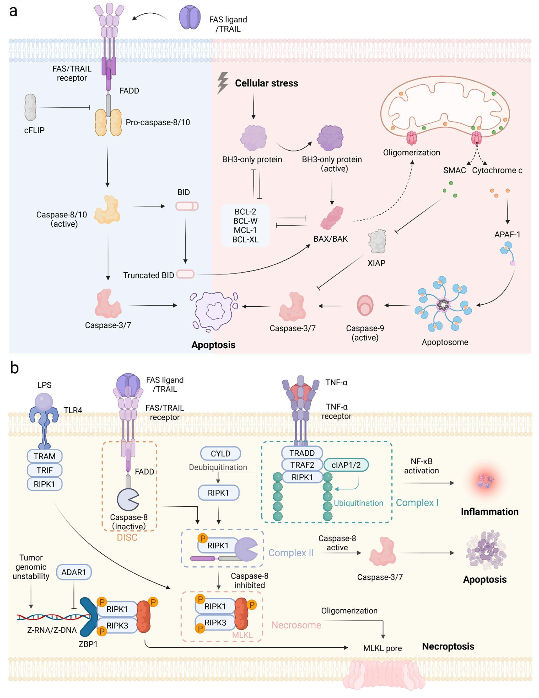
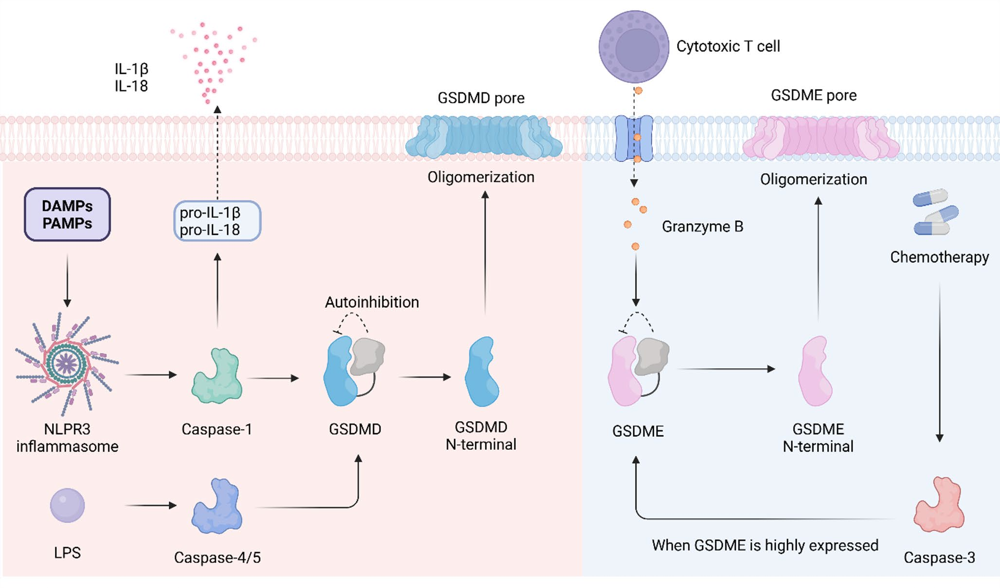
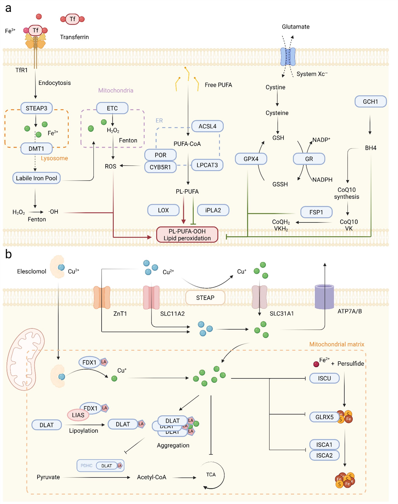
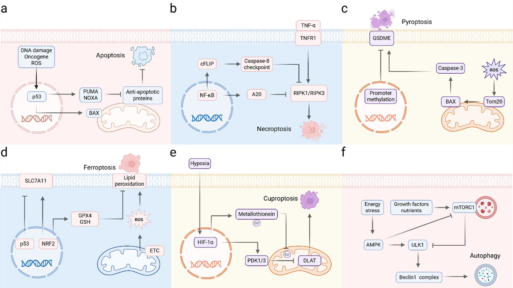
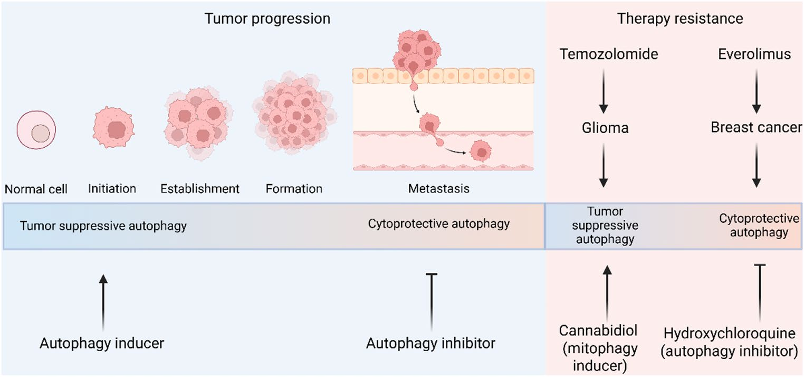

PUBLISHED ABSTRACT
Abstract
Background. Regulated cell death has long been central to cancer therapy, with apoptosis historically regarded as the principal mechanism underlying treatment efficacy.
Main body. Increasing evidence now demonstrates that tumors engage a diverse array of regulated cell death programs, including apoptosis, necroptosis, pyroptosis, ferroptosis, cuproptosis, autophagy-associated death processes, and emerging stress-induced modalities such as parthanatos and disulfidptosis. These pathways can be broadly conceptualized as protein-governed, metabolism-driven, or stress-induced programs, reflecting distinct mechanistic principles and differing degrees of mechanistic definition and translational maturity. Their activation or suppression can influence tumor progression, immune modulation, and therapy resistance. While therapeutic induction of specific death modalities offers opportunities for tumor control, death-associated signaling may also paradoxically promote tumor adaptation and immune evasion under certain conditions.
Conclusions. This review integrates current understanding of regulated cell death programs to highlight their plasticity in cancer and underscores the importance of mechanism-guided targeting of death pathways to improve cancer therapy outcomes.
Clinical trial registration. Not applicable.
Published keywords: Regulated cell death · Apoptosis · Ferroptosis · Cellular stress · Therapy resistance
1 Introduction
The fundamental principle underlying many cancer therapies is the selective induction of cell death in malignant cells. For decades, the paradigm of regulated cell death in oncology has been dominated by apoptosis, a highly orchestrated process essential for tissue homeostasis and development. The therapeutic effects of conventional chemotherapy and radiotherapy have largely been attributed to their ability to indirectly trigger apoptotic pathways. However, the pervasive development of therapy resistance underscores the limitations of interpreting cancer therapy through a single death modality. Cancer cells can evade apoptosis through genetic, epigenetic, and metabolic adaptations, and such resistance has motivated increasing interest in whether alternative regulated cell death programs can be therapeutically engaged [1].
Recent advances have moved beyond the traditional apoptosis-necrosis dichotomy, revealing a diverse repertoire of regulated cell death programs, each with distinct molecular triggers, execution mechanisms, and immunological consequences. These include inflammatory lytic deaths such as necroptosis and pyroptosis, metabolism-driven processes such as ferroptosis and cuproptosis, and stress-responsive pathways such as parthanatos and disulfidptosis [2–5]. Concurrently, autophagy, primarily a stress-adaptive survival mechanism, can restrain tumor initiation by preserving cellular homeostasis but support established tumors under metabolic or therapeutic stress [6]. Although these modalities are often investigated as separate pathways, selected examples of pathway crosstalk indicate that they do not always operate in isolation. For instance, caspase-8 activity can influence the balance between apoptosis and necroptosis [7, 8], whereas caspase-3-mediated cleavage of GSDME can shift apoptotic signaling toward pyroptosis in GSDME-expressing cells [9]. These observations suggest that therapeutic response may depend not only on activation of an individual death pathway, but also on the cellular context that permits, suppresses, or shifts the engagement of specific death programs.
This review synthesizes the evolving landscape of regulated cell death into a unified framework, grouping pathways into protein-governed, metabolism-driven, and stress-induced programs. These categories are intended to reflect distinct mechanistic principles, not a strict hierarchy of evidence, although the included modalities differ substantially in mechanistic definition and translational development. Protein-governed pathways rely on dedicated molecular executioners, metabolism-driven processes link metabolic state to cell fate, whereas stress-induced modalities arise from catastrophic cellular perturbations and remain less mechanistically defined. After examining these modalities individually, this review further compares selected upstream regulatory themes that recur across death programs and shape pathway engagement. By integrating pathway-specific mechanisms with therapeutic targeting strategies, resistance mechanisms, immunological consequences, and shared regulatory constraints, this review highlights how a more precise understanding of regulated cell death may inform mechanism-guided cancer treatment strategies.
2 Main text
2.1 Part I: Canonical regulated cell death pathways with defined molecular executioners
This section focuses on three canonical forms of regulated cell death—apoptosis, necroptosis, and pyroptosis—defined by their reliance on well-characterized molecular executioners. Although these pathways differ in immunological outcome, they share an executor-centric architecture that renders them both frequent targets of oncogenic suppression and central nodes for therapeutic reactivation in cancer.
2.1.1 Apoptosis
The term apoptosis was introduced by Kerr, Wyllie, and Currie in 1972 to describe a morphologically distinct form of cell death [10]. Apoptosis is a highly regulated form of cell death characterized by membrane blebbing, cell shrinkage, chromatin condensation, DNA fragmentation, and subsequent phagocytic clearance [11]. It is mainly initiated through intrinsic mitochondrial and extrinsic death receptor pathways. The intrinsic pathway is regulated by the BCL-2 family of proteins, comprising anti-apoptotic proteins (BCL-2, BCL-XL, BCL-W, MCL-1, BFL-1/A1), pro-apoptotic pore-formers (BAX, BAK, BOK), and pro-apoptotic BH3-only proteins (BAD, BID, BIK, BIM, BMF, HRK, NOXA, PUMA, etc.) [12, 13]. Intracellular stress signals, such as DNA damage, endoplasmic reticulum stress, oxidative stress, or growth factor deprivation, activate this pathway (Fig. 1a). These signals activate BH3-only proteins which either directly activate effector proteins BAX/BAK or neutralize anti-apoptotic BCL-2 family members [14–16]. Once activated, BAX/BAK oligomerize on the mitochondrial outer membrane, causing mitochondrial outer membrane permeabilization (MOMP), which results in the release of cytochrome c and SMAC (second mitochondria-derived activator of caspase). In the cytosol, cytochrome c binds APAF-1, forming the apoptosome complex, which activates initiator caspase-9. Caspase-9 then cleaves and activates executioner caspases such as caspase-3/7, culminating in irreversible proteolytic degradation of cellular components and cell demise [17, 18]. In parallel, inhibitor of apoptosis proteins (IAPs), particularly XIAP, restrain caspase activation, whereas mitochondria-released SMAC antagonizes IAP-mediated caspase inhibition by binding to their baculoviral IAP repeat (BIR) domains [19–21]. The extrinsic pathway is initiated by extracellular death ligands, including FAS ligand, TNF-α, or TNF-related apoptosis-inducing ligand (TRAIL), which bind to their respective cell surface receptors (FAS, TNFR1, or DR4/5). This binding triggers caspase-8-dependent activation of caspases and downstream effector caspases [22]. FAS ligand or TRAIL binding causes the receptors to trimerize, and the death domain (DD) within the intracellular domain of the receptors recruits intracellular adaptor proteins, such as FAS-Associated Death Domain protein (FADD) [23, 24]. FADD contains a death effector domain (DED) that further recruits and activates caspase-8/10, forming a multiprotein complex known as the death-inducing signaling complex (DISC) [25]. The anti-apoptotic protein cFLIP (cellular FLICE-inhibitory protein), a structural homologue of caspase-8, can disrupt DISC formation by competing with caspase-8 for recruitment to FADD [26]. In type I cells, such as lymphocytes, caspase-8 activation is sufficient to cleave and activate caspase-3/6/7, whereas type II cells, such as hepatocytes and pancreatic β-cells, require mitochondrial amplification to overcome XIAP-mediated inhibition of executioner caspases. This amplification is achieved through caspase-8-mediated cleavage of the BH3-only protein BID into its truncated form (tBID), which activates the intrinsic apoptotic pathway. The subsequent release of mitochondrial proteins, including the IAP antagonist SMAC, counteracts XIAP’s inhibition and permits apoptosis to proceed [27, 28].


Impairment of apoptotic mechanisms plays a critical role in tumorigenesis. Many oncogenes that drive cell division, including MYC, E1A, E2F1, and cyclin D, can also induce apoptosis [29]. During tumor development, hypoxia, oxidative stress, the absence of external survival factors and nutrients can activate apoptosis. Consequently, apoptosis evasion is imperative for cancer cell survival. Several mechanisms lead to the deregulation of apoptosis: (1) Imbalance in BCL-2 family proteins: Overexpression of anti-apoptotic BCL-2 has been reported in various tumors, including prostate cancer, diffuse large B-cell lymphoma, and melanoma [30–32]. Additionally, MCL-1 upregulation is observed in a broad spectrum of tumors including chronic myeloid leukemia, myeloma, and hepatocellular carcinoma (HCC) [33–35]. (2) Overexpression of IAPs and/or downregulation of SMAC: Many solid tumors exhibit amplifications at the 11q21-q23 locus, leading to increased copy numbers of c-IAP1 and c-IAP2. XIAP is frequently upregulated and serves as an independent poor prognostic marker in various cancers [36]. Conversely, reduced SMAC expression has been associated with poorer prognosis in renal cell carcinoma, oral squamous cell carcinoma, and colorectal cancer [37–39]. (3) Impaired wild-type p53 function: p53 can transcriptionally activate targets like CDKN1A, BAX, PUMA, and NOXA to regulate cell cycle arrest and apoptosis [40]. (4) Loss or functional inactivation of caspases: Key examples include epigenetic/genetic inactivation of the CASP8 gene in neuroblastoma, and the frequent loss of caspase-10 protein expression in breast and lung carcinomas [41–43].
Most conventional chemotherapy and radiotherapy induce apoptosis indirectly, primarily by blocking DNA synthesis, damaging DNA, or inhibiting DNA replication [44]. In contrast, BH3-mimetic drugs directly engage mitochondrial apoptosis by structurally mimicking the BH3 domain of pro-apoptotic proteins and liberating pro-apoptotic counterparts from pro-survival BCL-2 family proteins [45]. Venetoclax was the first Food and Drug Administration (FDA)-approved, BCL-2-specific small-molecule inhibitor, indicated for the treatment of chronic lymphocytic leukemia (CLL) with 17p deletion in patients who have received at least one prior therapy [46]. CLL is characterized by a dependency on the anti-apoptotic protein BCL-2, which contributes to apoptosis resistance in malignant B cells. A classic mechanism of BCL-2 dysregulation in B-cell malignancies is the t(14;18) translocation, which places BCL2 under the control of the immunoglobulin heavy-chain enhancer [47, 48], leading to its constitutive expression and conferring apoptosis resistance in malignant B cells [49]. As a BH3-mimetic, venetoclax binds to the hydrophobic groove of BCL-2 (with high affinity, Ki < 0.01 nM) [50], displacing pro-apoptotic proteins such as BIM and PUMA, which ultimately activates the intrinsic apoptosis pathway. Beyond BCL-2 inhibitors, other anti-apoptotic proteins are also being investigated as antitumor drug targets. However, some of them have been associated with significant intolerable side effects. In a phase I clinical trial (NCT00481091; first submitted May 30, 2007) (Table 1), the application of Navitoclax, a dual inhibitor of BCL-2, BCL-XL, and BCL-W, showed antitumor effect in chronic lymphocytic leukemia, but was limited by causing dose-dependent thrombocytopenia [51, 52]. This limitation stems from the essential role of BCL-XL in platelet survival; its inhibition renders platelets susceptible to apoptosis [53]. MEK inhibitors can induce tumor cell apoptosis by upregulating BIM [54], while Navitoclax exerts a synergistic effect by binding to anti-apoptotic proteins [55]. A phase I/II study (NCT02079740; first submitted March 04, 2014) of combined Navitoclax and MEK inhibitor trametinib in KRAS or NRAS mutant solid tumors demonstrated promising efficacy in gynecologic cancers with a lower incidence of thrombocytopenia. This improved safety profile may be attributed to a 7-day lead-in dosing strategy—which stimulates platelet production—and the generally better bone marrow function in solid tumor patients compared to those with hematologic malignancies. However, no objective responses were observed in colorectal, pancreatic, or lung cancers, highlighting the need for predictive biomarkers to identify responsive patients [56]. Targeting MCL-1 has proven similarly difficult. The MCL-1 inhibitor AMG-397 was discontinued in 2019 due to cardiac safety concerns in a phase I trial (NCT03465540; first submitted March 08, 2018) [45]. Two primary reasons may account for the cardiotoxicity associated with MCL-1 inhibitors. First, as terminally differentiated cells, cardiomyocytes are exceptionally vulnerable to apoptosis; even a small degree of cardiomyocyte loss is capable of leading to significant cardiac dysfunction [57, 58]. Second, MCL-1 plays an essential apoptosis-unrelated role in mitochondrial fatty acid oxidation (FAO) [59]. FAO remains a major cardiac energy source even when glucose is available [60], and the regulation of FAO is exclusively dependent on MCL-1, with no functional redundancy provided by its anti-apoptotic homologs [61]. Given the crucial physiological functions of anti-apoptotic proteins, developing BH3-mimetic drugs requires a careful balance between efficacy and tolerability to establish a viable therapeutic window.
Table 1. Summary of selected clinical trials by cell death pathway in oncology
| Pathway | Indication | Treatment (Mechanism) | Result & Key barrier | Trial identifier |
|---|---|---|---|---|
| Apoptosis | Chronic lymphocytic leukemia | Navitoclax (direct BCL-2/BCL-XL/BCL-W inhibitor) | R: Activity observed; toxicity-limited B: Dose-limiting thrombocytopenia due to on-target BCL-XL inhibition in platelets | NCT00481091 [51, 52] |
| Apoptosis | Relapsed or refractory hematologic malignancies | AMG 397 (direct MCL-1 inhibitor) | R: Discontinued; safety-limited B: Cardiotoxicity due to MCL-1 inhibition disrupting FAO in cardiomyocytes | NCT03465540 [45] |
| Apoptosis | Relapsed or refractory ALL/LBL | Low-dose Navitoclax + Venetoclax (direct BCL-2 family inhibitors) | R: Efficacy signal B: Early-phase; needs larger validation | NCT03181126 [69] |
| Apoptosis | Relapsed or refractory multiple myeloma | Aponermin (direct TRAIL receptor agonist) + Thalidomide + Dexamethasone | R: Survival benefit reported B: Multi-agent attribution; ~10% Grade 3/4 hepatotoxicity | ChiCTR-IPR-15,006,024 [73] |
| Apoptosis | KRAS/NRAS mutant advanced solid tumors | Navitoclax (direct BCL-2/BCL-XL/BCL-W inhibitor) + Trametinib (indirect sensitization via MEK inhibition) | R: Selective efficacy signal B: No objective responses in non-gynecologic tumors; predictive biomarker needed | NCT02079740 [56] |
| Necroptosis | Extremity sarcoma and melanoma | CBL0137 (direct Z-DNA inducer) | R: Terminated; no objective response B: Minimal toxicity; clinical efficacy not demonstrated | NCT03727789 [74] |
| Pyroptosis | Primary hepatocellular carcinoma | PIN (direct pyroptosis-inducing oncolytic virus) + anti-PD-1 | R: Ongoing; no reported results B: Phase I; efficacy and safety not yet reported | NCT07018518 [75] |
| Ferroptosis | Recurrent glioblastoma | Sulfasalazine (indirect ferroptosis induction via System Xc⁻ inhibition) + Stereotactic Radiosurgery | R: Preliminary efficacy signal B: Phase I; small cohort; confirmation needed | NCT04205357 [76, 77] |
| Ferroptosis | Advanced solid tumors | Carbon Nanoparticles-Fe(II) Complex (direct Fenton reaction inducer) | R: Preliminary sponsor-reported signal B: Mild local adverse events; independent peer-reviewed validation needed | NCT06048367 [78, 79] |
| Cuproptosis | Advanced solid tumors | Elesclomol (direct copper ionophore) + Paclitaxel | R: Overall negative; subgroup signal B: Benefit only in normal lactate dehydrogenase subgroup; lack of predictive biomarker | NCT00522834 [80] |
| Autophagy | Recurrent glioblastoma | Nabiximols (indirect mitophagy inducer) + dose-intense Temozolomide | R: Survival signal B: Phase I; limited sample size; phase II ongoing | NCT01812603 [81] |
| Autophagy | Pancreatic cancer | Hydroxychloroquine (indirect autophagy inhibitor) + Gemcitabine/Nab-Paclitaxel | R: No survival benefit B: Improved pathological response; no overall survival benefit | NCT01978184 [82] |
| Autophagy | Resistant HR+/HER2-breast cancer | Hydroxychloroquine (indirect autophagy inhibitor) + CDK4/6 inhibitor | R: Efficacy signal B: Phase I/II; phase III trial registered | NCT05953350 [83] |
| Autophagy | Recurrent breast cancer | Hydroxychloroquine (indirect autophagy inhibitor) + Everolimus | R: Recurrence-free survival signal B: Needs phase III validation | NCT03032406 [84] |
The death-pathway-modulating agent(s) in each regimen are highlighted in bold, with direct or indirect modulation specified in parentheses. In the “Result & Key barrier” column, R denotes the reported result or evidence status, and B denotes the key barrier or limitation. Mechanistic annotations indicate the cell-death-relevant rationale and do not imply sole attribution of clinical benefit to the indicated pathway. “Signal” indicates reported activity within the tested study context, not necessarily validated clinical benefit. Sponsor-reported findings require independent peer-reviewed validation, and ongoing studies are listed as having no reported results. Trial identifiers provide access to study protocols and results in registry databases. NCT numbers are from ClinicalTrials.gov; ChiCTR-IPR numbers are from the Chinese Clinical Trial Registry. ALL, acute lymphoblastic leukemia; LBL, lymphoblastic lymphoma; FAO, fatty acid oxidation.
Resistance to BH3 mimetics in tumor cells arises through three main mechanisms: (1) acquisition of genomic mutations within the BCL-2 family genes that disrupt drug binding; (2) upregulation of the targeted anti-apoptotic protein; and (3) compensatory upregulation of other anti-apoptotic proteins or downregulation of pro-apoptotic proteins [62]. Although BH3 mimetics have shown promising efficacy in hematologic malignancies, their application in solid tumors remains challenging. This is largely due to greater tumor heterogeneity and a more complex dependence on multiple anti-apoptotic proteins [63, 64]. For example, analyses of clinical breast cancer datasets have shown that MCL1 exhibits higher expression levels and more frequent gene amplification compared to BCL-2 or BCL-XL across all major molecular subtypes [65]. Breast tumor cell lines are dependent on MCL-1 for survival, and BCL-XL can compensate for MCL-1 loss by binding and neutralizing free BIM when MCL-1 is selectively inhibited [66]. To address this complexity, BH3 profiling has been developed to measure a cancer cell’s dependence on specific anti-apoptotic proteins, which helps predict the most effective BH3-mimetic [67]. This functional assay, in conjunction with genetic testing, could be valuable for guiding therapy as more BH3 mimetics become available. Chemotherapy primarily sensitizes tumor cells to apoptosis, potentiating the effect of BH3 mimetics [68]. Combining different BH3 mimetics has been shown to elicit robust antitumor responses across preclinical studies; for instance, the combination of venetoclax with low-dose Navitoclax was well tolerated in a phase I trial (NCT03181126; first submitted June 05, 2017) [69]. Additionally, a recent study demonstrated synergistic antitumor activity by combining venetoclax-resistant anti-CD19 chimeric antigen receptor T (CAR-T) cells with venetoclax in lymphoma xenograft models [70].
Building on strategies that indirectly promote apoptosis, direct activation of the death receptor pathway represents another promising therapeutic approach. A key development in this area is the recombinant mutant human TRAIL protein, Aponermin, which received its first global approval in China in November 2023 for the treatment of relapsed/refractory multiple myeloma [71]. Structurally, Aponermin is a circularly permuted variant created by connecting the N-terminal fragment of native TRAIL (amino acids 121–135) to its C-terminal fragment (amino acids 135–281) via a linker (Gly-Gly-Gly-Gly-Gly). This engineered configuration enhances its antitumor activity and stability in vitro. Mechanistically, Aponermin activates the extrinsic apoptosis pathway by binding to death receptor 4 (DR4) and/or death receptor 5 (DR5) on the tumor cell membrane, thereby inducing apoptosis in a p53-independent manner [72]. In a phase III clinical trial (ChiCTR-IPR-15006024; first submitted November 17, 2014), the combination of Aponermin, thalidomide, and dexamethasone demonstrated favorable efficacy and safety. The median overall survival was six months longer in the Aponermin group than in the placebo group. The primary adverse reaction was hepatotoxicity (carrying a black box warning), which most commonly presented as mild elevations (Grade 1–2) in AST and ALT levels that typically resolved before the next treatment cycle. Notably, however, approximately 10% of patients in the Aponermin group experienced Grade 3 or 4 hepatotoxicity-related adverse reactions, compared to less than 1% in the placebo group [73].
2.1.2 Necroptosis
Necroptosis is a regulated, caspase-independent form of inflammatory cell death, typically triggered by two major sources: the engagement of membrane receptors (such as death receptors and Toll-like receptors) under conditions of caspase-8 inhibition, or the activation of cytosolic pattern recognition receptors (such as Z-DNA binding protein 1, ZBP1). Its execution converges on the phosphorylation of mixed lineage kinase domain-like pseudokinase (MLKL) by receptor-interacting serine/threonine-protein kinase 3 (RIPK3), the most common upstream kinase, leading to lytic disruption of the plasma membrane and cell demise [85]. Functionally, necroptosis can serve as an alternative inflammatory death route when caspase-8-dependent apoptotic signaling is impaired. The canonical necroptotic pathway is initiated by tumor necrosis factor (TNF) engagement (Fig. 1b). Initial receptor binding promotes the formation of membrane-associated Complex I, where c-IAP1/2-mediated ubiquitination of RIPK1 stabilizes a pro-survival signaling platform that supports nuclear factor-κB (NF-κB) activation and inflammatory responses. Cell fate is then determined by the deubiquitinase cylindromatosis (CYLD), which removes ubiquitin chains from RIPK1, facilitating its release from Complex I and enabling the cytosolic assembly of Complex II. The outcome of Complex II is critically regulated by caspase-8. When active, caspase-8 cleaves RIPK1; this cleavage acts as an essential negative feedback mechanism, restraining RIPK1 kinase activity to direct the cell toward apoptosis and suppress necroptosis [86]. Conversely, when caspase-8 activity is inhibited or absent, RIPK1 avoids cleavage and, together with RIPK3, forms a stable necroptosis-inducing complex termed the necrosome via receptor-interacting protein homotypic interaction motif (RHIM)-domain interactions. Within the necrosome, activated RIPK3 phosphorylates the terminal effector MLKL, triggering its oligomerization, translocation to the plasma membrane, and execution of lytic cell death [87]. Ultimately, the necroptotic cascade concludes with plasma membrane rupture, releasing pro-inflammatory cellular contents, including damage-associated molecular patterns (DAMPs) and cytokines, while increasing antigen availability for cross-presentation and adaptive antitumor immunity [88]. Beyond extrinsic signals, the cytosolic sensor ZBP1 activates RIPK3-MLKL-dependent necroptosis upon detecting left-handed Z-form nucleic acids, a structure rarely present in the cytosol under physiological conditions. These atypical ligands originate from viral infections or from endogenous Z-RNAs induced by cellular stress [89, 90]. Notably, there is a key species-specific distinction in this pathway. In mice, ZBP1 directly recruits and activates RIPK3, a process antagonized by RIPK1 to limit inflammation [91, 92]. In human cells, however, ZBP1 requires RIPK1 as a scaffold to engage RIPK3, a difference governed by sequence variations in the RHIM domain of RIPK3 [93].
Necroptosis presents a double-edged sword in cancer therapy, with evidence supporting both antitumor and protumor functions. For instance, inducing tumor cell necroptosis can stimulate antitumor immunity through several defined pathways. Chemotherapy such as cisplatin triggers RIPK3-dependent necroptosis, leading to mitochondrial DNA release, activation of the cyclic GMP-AMP synthase–stimulator of interferon genes (cGAS-STING) pathway and type I interferon production. This cascade promotes a CD8+ T cell-dependent abscopal effect—a systemic antitumor response in which local therapy controls distant, non-irradiated metastases [94]. Alternatively, necroptotic cells can directly secrete interferon-beta (IFN-β), priming a protective host CD4⁺ T cell response via type I interferon receptor signaling [95]. Furthermore, therapeutic strategies are being developed to overcome the immune evasion triggered by tumors’ active suppression of necroptosis. Adenosine deaminase RNA specific 1 (ADAR1), for example, promotes tumor immune escape by editing endogenous Z-RNAs, thus inhibiting ZBP1 sensing and necroptosis. This resistance can be counteracted experimentally by the small molecule CBL0137, which induces Z-DNA formation and activates ZBP1-associated inflammatory cell death signaling in preclinical models [96]. Consistent with this preclinical rationale, a phase I trial of intra-arterial CBL0137 (NCT03727789; first submitted October 12, 2018) showed minimal toxicity and favorable tumor-selective accumulation, but no objective responses were observed, and the trial was terminated [74]. These findings suggest that CBL0137 monotherapy may be insufficient for solid tumors; ongoing trials are testing CBL0137 in combination with immune checkpoint inhibitors (NCT05498792; first submitted August 08, 2022) and in other cancer types (NCT04870944; first submitted April 19, 2021). In addition, the natural compound OSW-1, a RIPK1/RIPK3-independent necroptosis inducer, triggers p53-upregulated modulator of apoptosis (PUMA)-dependent cell death and potentiates anti-PD-1 immunotherapy in colorectal cancer models [97]. However, necroptosis-associated signaling does not uniformly promote antitumor immunity. In pancreatic ductal adenocarcinoma (PDA), pharmacologic blockade of RIPK1/RIPK3 signaling suppresses tumor progression by reducing CXCL1-mediated myeloid cell recruitment, disrupting SAP130–Mincle signaling between tumor cells and macrophages, and reprogramming T cells toward antitumor effector function [98]. Related tumor-promoting effects have been observed in other treatment settings. For instance, in esophageal squamous cell carcinoma, FGFR2 inhibition triggers RIPK1/MLKL-dependent necroptosis by suppressing the Hippo pathway. This therapy-induced necroptosis leads to IL-8 secretion, which upregulates PD-L1 on surviving cells, facilitating immune evasion [99]. A parallel protumor mechanism is observed in radiotherapy, where radiation-induced necroptosis activates JNK via phosphorylated MLKL, driving IL-8 secretion and proliferation of surviving cells to cause recurrence [100]. Beyond acute lytic cell death, necroptotic signaling can be reprogrammed into a chronic, protumor state. In hepatocytes with low RIPK3 expression, co-activation of necrosome signaling and NF-κB results in a sustained “sublethal” state, enabling continuous secretion of cytokines such as C-C motif chemokine ligand 20 (CCL20) and monocyte chemoattractant protein-1 (MCP-1) that recruit procarcinogenic macrophages and drive inflammation-driven hepatocarcinogenesis [101]. In colorectal cancer cells, metabolic adaptations, such as using glycolytic pyruvate to scavenge reactive oxygen species (ROS) and inhibit RIPK1/RIPK3 signaling under hypoxia, enable direct resistance to necroptosis [102, 103]. Tumors also actively induce necroptosis in the surrounding stroma to facilitate metastasis. For instance, tumor cell-derived amyloid precursor protein binds endothelial death receptor 6, triggering necrosis in vascular endothelial cells, disrupting vascular integrity, and promoting extravasation [104]. Additional model-specific findings further illustrate this variability, including the lack of tumor-growth suppression after RIPK1 inhibition in a KRAS-mutant PDA model and ZBP1-mediated metastasis in breast cancer under glucose deprivation [105, 106].
2.1.3 Pyroptosis
Pyroptosis is a regulated lytic form of cell death characterized by Gasdermin (GSDM) family protein-mediated pore formation in the plasma membrane, cytoplasmic swelling, and the release of pro-inflammatory cytokines [107]. The term pyroptosis was coined in 2001 to describe a pro-inflammatory, caspase-1-dependent cell death, primarily studied in the context of host defense against infections [108]. The field was revolutionized in 2015 by the landmark identification of Gasdermin D as the pore-forming executor [109, 110]. This discovery redefined pyroptosis by shifting the primary criterion from a process mediated by inflammatory caspases to an event driven by Gasdermin protein cleavage. Subsequent research has revealed that most members of the Gasdermin family (GSDMA, GSDMB, GSDMC, GSDMD, and GSDME) share a conserved pore-forming mechanism [111–114]. Canonically, pyroptosis is triggered by inflammasomes (Fig. 2), which are cytosolic multiprotein complexes that assemble when pattern-recognition receptors, such as NLRP3, detect pathogen- or damage-associated molecular patterns (PAMPs/DAMPs). This assembly involves the recruitment of Nek7, a kinase essential for NLRP3 inflammasome assembly, along with the adaptor protein Apoptosis-associated speck-like protein containing a CARD (ASC), facilitating caspase-1 activation [115]. Active caspase-1 then orchestrates two pivotal events: first, the protease activity processes the precursors of IL-1β and IL-18 into their mature, secreted forms; second, caspase-1-mediated cleavage liberates the GSDMD-N-terminal fragments from GSDMD-C-terminal autoinhibition. These N-terminal fragments bind specific phospholipids on the inner membrane, oligomerize, and form lytic pores. Resultant pore formation disrupts osmotic balance, leading to cell swelling and ultimately, plasma membrane rupture [107]. Alternatively, a non-canonical inflammasome pathway exists where cytosolic lipopolysaccharide (LPS) directly activates caspase-4/5 in humans and caspase-11 in mice, which similarly converge on GSDMD cleavage to execute pyroptosis [116]. Beyond these pathways, pyroptosis can be initiated by diverse upstream signals, including apoptotic caspases, cytotoxic lymphocyte granzymes, and cellular stressors such as hypoxia or mitochondria-generated reactive oxygen species [112, 114, 117–120]. The regulation between cell death modalities is complex: catalytically active caspase-8 initiates apoptosis and inhibits necroptosis. When its enzymatic activity is lost, necroptosis becomes the predominant death pathway. Furthermore, in specific cell types, such as intestinal epithelial cells and macrophages, blocking necroptosis reveals a scaffold function of inactive caspase-8 that triggers ASC-dependent pyroptosis [7, 8]. In addition to executing lytic cell death, Gasdermin activation can influence other processes. It may shift cell fate towards alternative death modalities like necroptosis [121], or drive non-lytic processes like immune defense and tissue repair [122–124].


While inflammasome-activated pyroptosis primarily functions as a host defense mechanism in immune cells, GSDME-mediated pyroptosis has emerged as an important mechanism linking tumor cell death to antitumor immunity in selected cancer therapy contexts. Research has demonstrated that the activation of caspase-3 by agents such as chemotherapy or TNF-α can cleave GSDME, thereby redirecting the cellular death pathway from apoptosis to pyroptosis in GSDME-expressing cells. Indeed, the intracellular abundance of GSDME dictates whether caspase-3 activation leads to pyroptosis or apoptosis [9]. Beyond this cell fate switch, GSDME-mediated pyroptosis has been implicated in tumor suppression. Cytotoxic lymphocytes release granzyme B, which enters target cells via perforin pores and cleaves GSDME at the same site as caspase-3, directly triggering pyroptosis. Concomitantly, GSDME expression within the tumor microenvironment enhances the phagocytic capacity of macrophages and promotes the infiltration and cytotoxic activity of natural killer and CD8+ T cells, establishing a feed-forward antitumor immune response [112]. Notably, recent in vivo studies employing controlled Gasdermin activation have shown that inducing pyroptosis in even a minor fraction (under 15%) of tumor cells is sufficient to trigger a robust, T cell-dependent antitumor immune response capable of clearing entire tumor grafts. For example, in 4T1 murine mammary tumors—which are immunologically “cold” and resistant to anti-PD-1 monotherapy—the inflammation from targeted pyroptosis synergized with checkpoint blockade to achieve marked tumor regression [125].
Given that pyroptosis can synergize with immunotherapy, diverse strategies have been developed to stimulate the transition of tumors from an immunosuppressive (“cold”) to an immunostimulatory (“hot”) state. One approach employs mitochondria-targeted photodynamic therapy. By using a photosensitizer targeting translocator protein that is activated by light to generate mitochondrial ROS, this therapy triggers pyroptosis through the ROS/p38/caspase-3/GSDME axis, inducing immunogenic cell death and thereby sensitizing microsatellite-stable colorectal tumors to anti-PD-1 therapy [126]. This immunomodulatory potential of therapy-induced pyroptosis may help explain, at least in part, the clinical benefit of combining platinum-based chemotherapy with PD-L1 inhibitors in lung cancer. A key mechanism underlying this synergy is now elucidated: cisplatin induces GSDME-dependent pyroptosis, which activates a potent immunostimulatory cascade via the IL-12/interferon-γ (IFN-γ) axis to remodel the tumor microenvironment and potentiate the response to anti-PD-L1 therapy [127, 128]. A key limitation, however, is cisplatin’s reliance on sufficient tumor GSDME expression. To address this limitation, a platinum(IV) prodrug strategy has been developed to co-deliver cisplatin with epigenetic modulators such as DNA methyltransferase and histone deacetylase inhibitors. This approach aims to simultaneously induce DNA damage and epigenetically reactivate the silenced GSDME gene, restoring pyroptotic potential via the caspase-3/GSDME pathway even in tumors with low basal GSDME expression [129]. Beyond conventional chemotherapy, poly(ADP-ribose) polymerase (PARP) inhibitors, a class of targeted therapy used in cancers with homologous recombination deficiency, have been shown to induce pyroptosis in ovarian cancer via the TNF/caspase-8/GSDM axis. This process not only directly kills tumor cells but also promotes dendritic cell maturation and enhances neoantigen-specific T cell clonal expansion, reshaping the tumor immune microenvironment and supporting the rationale for combining PARP inhibitors with immunotherapy [130]. However, despite its antitumor effects, therapeutic induction of pyroptosis carries the risk of severe systemic inflammatory toxicity. For instance, in CAR T-cell therapy, GSDME-mediated tumor cell pyroptosis can trigger a cascade of macrophage activation and cytokine release syndrome [131]. Notably, metabolites such as mannose may offer a protective strategy; during chemotherapy, mannose activates AMP-activated protein kinase (AMPK) to inhibit GSDME, potentially mitigating toxicity without compromising antitumor efficacy [132].
To counteract pyroptosis-induced antitumor immunity, cancer cells have developed a sophisticated repertoire of evasion mechanisms. At the epigenetic level, methylation-induced silencing of the GSDME gene is a prevalent inactivation mechanism in gastric, colorectal, and breast cancers [133]. Another strategy employed by carcinoma cells to evade cytotoxic lymphocyte attack involves skewing GSDMB alternative splicing toward isoforms 1, 2, and 5. Critically, although all GSDMB isoforms are cleaved by granzyme A, only the N-terminal fragments of isoforms 3 and 4 are capable of pore formation. In contrast, the cleaved fragments of isoforms 1 and 2 not only lack pore-forming activity but can also co-assemble with active fragments to form non-functional hetero-oligomers, thereby dominantly inhibiting pyroptosis [134]. At the metabolic level, cancer cells under the selective pressure of tyrosine kinase inhibitors (TKIs) can evade pyroptosis by enhancing methionine metabolism. This adaptation serves a dual purpose: it generates organic osmolytes like taurine to preserve plasma membrane integrity against osmotic lysis, and it concurrently lowers S-adenosyl-L-homocysteine (SAH) levels. The reduced SAH promotes genome-wide DNA hypermethylation, which silences genes involved in pro-pyroptotic inflammatory signaling and metal-ion homeostasis, facilitating long-term survival [135]. Notably, cancer cells possess a final line of defense that operates even after Gasdermin pore formation. Calcium influx through GSDMD pores can recruit the endosomal sorting complexes required for transport (ESCRT) machinery, particularly ESCRT-III, to the damaged plasma membrane. This system actively repairs lesions, preventing cell lysis and allowing sublytic cells to survive [136]. This ESCRT-mediated survival enables tumor cells to persist and paradoxically leverage the ensuing inflammatory response, including IL-1β release, to recruit immunosuppressive myeloid cells and foster a pro-tumorigenic microenvironment, rather than being eliminated [137]. Collectively, these layered mechanisms underscore the adaptive resilience of cancer cells in subverting an immunogenic cell death pathway.
2.2 Part II: Metabolic vulnerabilities and stress responses shaping cancer cell fate
Moving beyond protein-centric execution pathways, this part focuses on ferroptosis, cuproptosis, and autophagy as metabolism-linked processes that influence cancer cell fate. While ferroptosis and cuproptosis constitute distinct cell death modalities driven by lipid and mitochondrial metal ion dysregulation, autophagy primarily serves as a homeostatic and stress-adaptive mechanism that shapes cellular sensitivity to metabolic stress and therapy.
2.2.1 Ferroptosis
Ferroptosis is an iron-dependent form of regulated cell death driven by overwhelming lipid peroxidation within cellular membranes, formally named by Stockwell and colleagues in 2012 [2]. Morphologically, ferroptosis is distinct from apoptosis, necrosis, and autophagy, characterized by smaller mitochondria with increased membrane density, disorganized mitochondrial cristae, and eventual rupture of the plasma membrane [2, 138]. Under physiological conditions, cells possess antioxidant systems, such as glutathione peroxidase 4 (GPX4)-glutathione (GSH) system, to counteract this lipid peroxidation; however, ferroptosis is triggered when the rate of peroxidation exceeds this detoxification capacity, characterized by an impairment of redox homeostasis (Fig. 3a). The polyunsaturated fatty acids (PUFAs) within membrane phospholipids serve as the critical targets for oxidative attack, disrupting redox equilibrium. Despite their roles in enhancing membrane fluidity and acting as precursors for cellular signaling molecules, phospholipids with PUFAs, such as arachidonic acid (AA; C20:4) or adrenic acid (AdA; C22:4), contain highly susceptible bis-allylic hydrogens that are prone to oxidation [139]. Peroxidation is initiated through two major pathways: enzymatic oxidation and non-enzymatic autoxidation. Enzymatically, lipoxygenases (LOXs), such as 15-lipoxygenase, facilitated by the scaffold protein phosphatidylethanolamine-binding protein 1 (PEBP1), can directly oxygenate PUFA-containing phospholipids [140]. Non-enzymatic autoxidation is primarily driven by the Fenton reaction, where redox-active iron (Fe²⁺) reacts with hydrogen peroxide (H₂O₂) to generate hydroxyl radicals (•OH) that attack PUFAs [141]. The requisite H₂O₂ pool is supplied through multiple cellular pathways, primarily including the enzymatic dismutation of mitochondrial-derived superoxide anion (O₂•-) by superoxide dismutase (SOD), and the production by endoplasmic reticulum (ER)-resident enzymes such as NADPH-cytochrome P450 oxidoreductase (POR) and NADH-cytochrome b5 reductase (CYB5R1) [142–144]. Multiple subcellular membranes, including those of the ER, mitochondria, Golgi apparatus, peroxisomes and lysosomes, have been reported to serve as the initiation sites for lipid peroxidation under specific inducers [145–147]. Among these, mitochondria and the ER are considered particularly central: mitochondria are a major source of free radicals, while the ER harbors an extensive, PUFA-rich membrane system [148, 149]. The precise execution mechanism of ferroptosis remains incompletely defined but may involve plasma membrane pore formation and cation gradient collapse mediated by channels such as Piezo1 and TRP channels, triggered by the accumulation of lipid peroxides at the membrane [150, 151]. Finally, lipid peroxidation and ferroptosis can propagate between adjacent cells in a process dependent on α-catenin-mediated contacts and extracellular iron [152].


The cellular phospholipid profile is a critical determinant of ferroptosis sensitivity. Phospholipids with a PUFA at the SN-2 position are more susceptible to lipid peroxidation than those with a monounsaturated fatty acid (MUFA) or saturated fatty acid (SFA) at the same position. The incorporation of PUFAs into phospholipids is a tightly regulated process. The enzyme acyl-coenzyme A synthetase long-chain family member 4 (ACSL4) is responsible for the critical first step in utilizing polyunsaturated fatty acids (PUFAs): their activation into acyl-CoA esters, and exhibits a marked substrate selectivity for long-chain PUFAs, such as AA and AdA described above [153, 154]. Notably, this process can be amplified by a positive feedback loop: lipid peroxidation activates protein kinase C βII (PKCβII), which in turn phosphorylates and activates ACSL4, further driving PUFA esterification and peroxidation [155]. The activated PUFAs are then incorporated into membrane phospholipids—primarily phosphatidylethanolamine (PE) and phosphatidylcholine (PC)—via the Lands’ cycle remodeling pathway. This cycle involves the hydrolysis of a phospholipid by phospholipase A2 (PLA2) to generate a lysophospholipid, which is then reacylated by lysophosphatidylcholine acyltransferase 3 (LPCAT3) using the ACSL4-produced acyl-CoA esters [139, 156]. Conversely, specific phospholipases can also antagonize ferroptosis. Calcium-independent phospholipase A2 (iPLA2) inhibits ferroptosis by hydrolyzing the peroxidized phospholipid 15-hydroperoxy-arachidonoyl-PE [157]. Similarly, intracellular lipoprotein-associated phospholipase A2 (Lp-PLA2) has been implicated in suppressing ferroptosis by modulating phospholipid composition, whereas the extracellular form does not share this function [158].
Ferroptosis is tightly regulated by cellular metabolism and counteracted by dedicated antioxidant systems. The primary defense mechanism against ferroptosis is the GPX4-GSH system, which is uniquely capable of reducing toxic lipid peroxides within membranes. Specifically, cytosolic or mitochondrial GPX4 utilizes GSH as its cofactor to catalytically reduce cytotoxic phospholipid hydroperoxides (PLOOHs) into non-toxic phospholipid alcohols (PLOHs), thereby halting the propagation of lipid peroxidation within cell membranes [159]. The activity and stability of GPX4 itself are subject to regulation. Recent studies show that post-translational palmitoylation of GPX4, mediated by specific ZDHHC acyltransferases and the depalmitoylase APT2, modulates its protein stability and influences cellular sensitivity to ferroptosis [160, 161]. Upstream of GPX4, cellular cystine uptake is critical for maintaining the GSH pool. This process is mediated by the System Xc⁻ antiporter (composed of SLC7A11 and SLC3A2). Beyond its classic role in supplying cysteine for GSH synthesis, SLC7A11-mediated cystine uptake simultaneously promotes GPX4 protein synthesis by activating the mechanistic target of rapamycin complex 1 (mTORC1) signaling pathway. This dual mechanism effectively couples the cell’s anti-ferroptotic capacity to cystine availability [162].
The ferroptosis suppressor protein 1 (FSP1)-ubiquinol (CoQH₂) system serves as a crucial, GPX4-independent parallel pathway for suppressing ferroptosis. Located at the plasma membrane, FSP1 functions as an NAD(P)H-dependent oxidoreductase that continuously regenerates reduced coenzyme Q10 (ubiquinol, CoQH₂) from its oxidized form (ubiquinone, CoQ10) [163, 164]. In addition, FSP1 can also reduce vitamin K to its hydroquinone form (VKH2). Both CoQH₂ and VKH₂ act as potent lipophilic radical-trapping antioxidants (RTAs), scavenging lipid peroxyl radicals (LOO·) within membranes to halt the propagation of lipid peroxidation [165]. Separately from the FSP1-mediated pathway, vitamin K epoxide reductase complex subunit 1 like 1 (VKORC1L1) provides an alternative route for generating reduced vitamin K, and its expression is transcriptionally repressed by p53 to facilitate ferroptosis-dependent tumor suppression [166]. Ferroptosis defense in the mitochondrial inner membrane is additionally mediated by dihydroorotate dehydrogenase (DHODH), which suppresses ferroptosis by regenerating ubiquinol from ubiquinone. Notably, this protective role of DHODH appears context-dependent and less prominent than the canonical systems mediated by GPX4 or FSP1 [167, 168]. The GTP cyclohydrolase 1 (GCH1)-tetrahydrobiopterin (BH4)- dihydrofolate reductase (DHFR) axis constitutes another GPX4-independent pathway against ferroptosis. GCH1 catalyzes the rate-limiting step in the de novo synthesis of BH4, and promotes the synthesis of reduced CoQ10 by generating its biosynthetic precursors. DHFR is responsible for regenerating BH4 from dihydrobiopterin (BH2) in a NAD(P)H-dependent manner. BH4 acts as a lipophilic radical-trapping antioxidant within membranes and drives lipidome remodeling, which in turn protects PUFA-containing phospholipids, especially those with two polyunsaturated fatty acyl tails from oxidation [169]. Collectively, NADPH serves as the indispensable electron donor, powering diverse antioxidant systems and regenerating radical-trapping antioxidants, thereby sustaining the integrated cellular defense against ferroptosis [170]. Beyond enzymatic pathways, endogenous metabolites can also directly inhibit ferroptosis. 7-Dehydrocholesterol (7-DHC), an intermediate in cholesterol synthesis, functions as a potent RTA by donating hydrogen atoms from its 5,7-diene moiety to quench lipid peroxyl radicals, thereby protecting cellular membranes [171].
Targeting vulnerabilities in ferroptosis defense is being investigated as a therapeutic strategy for selected cancers, particularly aggressive or therapy-resistant tumor states. For instance, therapy-resistant tumor states can acquire a critical dependency on GPX4, making ferroptosis defense an attractive therapeutic target [172]. Consistent with this vulnerability, the enzyme ACSL4—which promotes metastatic extravasation by enhancing membrane fluidity—also renders these aggressive cells more sensitive to ferroptosis due to their higher levels of PUFA-phospholipids [173]. Functioning as a marker for cancer stem cells and metastasized tumors, CD44 promotes tumor progression during epithelial-mesenchymal transitions (EMT) by mediating iron endocytosis [174]. Building on this mechanistic insight, the bifunctional molecule fentomycin-1 is designed to attack this axis by targeting membrane lipids and, upon lysosomal delivery, activating iron(II) to oxidize lysosomal membrane lipids and induce potent ferroptosis in CD44-high primary tumor cells [147, 175]. Independent parallel defense pathways also present druggable targets. A recent study indicates that FSP1 expression was elevated in KRAS-mutant lung adenocarcinoma (LUAD) and correlated clinically with poor patient survival. The small-molecule FSP1 inhibitor icFSP1 acts by inducing FSP1 phase separation, and as a monotherapy, it enhanced the overall survival of mice in a preclinical LUAD model, supporting its potential as a therapeutic target [176, 177]. Therapeutic induction of ferroptosis is being actively translated into clinical trials. A phase I clinical trial in China (NCT06048367; first submitted August 24, 2023) has been completed for a ferroptosis inducer carbon nanoparticles-Fe(II) complex, which delivers ferrous ions intratumorally to target advanced solid tumors [78]. Furthermore, the synergy between radiotherapy and immunotherapy can be mechanistically linked to ferroptosis, as both ATM (ataxia telangiectasia mutated, a DNA damage response kinase) activation and CD8+ T cell-derived IFN-γ converge to inhibit SLC7A11, thereby potentiating lipid peroxidation [178, 179]. This synergy can be enhanced pharmacologically: arachidonic acid synergizes with IFN-γ to upregulate ACSL4 and drive immunogenic tumor ferroptosis [180]. As another promising combination therapy for immunotherapy, the FDA-approved antiplatelet agent vorapaxar has been found to promote mitochondria-associated ferroptosis by driving the FOXO1/HMOX1-mediated mitochondrial iron overload pathway [181]. Building on the shared target of System Xc⁻, a phase I trial (NCT04205357; first submitted November 21, 2019) repurposed the FDA-approved anti-inflammatory drug sulfasalazine as a radiosensitizer for recurrent glioblastoma; the combination improved progression-free survival without dose-limiting toxicity, but the findings are from a small cohort and require confirmation [76, 77]. Ferroptosis can also promote immune suppression in a context-dependent manner. In KRAS-mutant pancreatic cancer, oxidative stress-induced ferroptosis triggers the release of oncogenic KRASG12D via exosomes. These exosomes are taken up by macrophages through receptor for advanced glycation end products (RAGE), activating STAT3 and fatty acid oxidation, which drives M2-like polarization and creates an immunosuppressive microenvironment that promotes tumor progression [182]. In another context, polymorphonuclear myeloid‑derived suppressor cells (PMN‑MDSCs) in the tumor microenvironment spontaneously undergo ferroptosis. PMN‑MDSCs actively release oxidized phospholipids and prostaglandin E2, which potently inhibit CD8⁺ T cell proliferation and function [183].
Under evolutionary pressure, tumor cells have evolved multi-layered defense systems to evade ferroptosis, spanning intrinsic metabolic reprogramming to microenvironmental crosstalk. At the level of intrinsic lipid metabolism, tumor cells can remodel their membranes to reduce susceptibility. Peroxisome-synthesized ether phospholipids containing polyunsaturated fatty acids (PUFA-ePLs) are crucial substrates for lipid peroxidation. Carcinoma cells, such as in clear-cell renal cell carcinoma (ccRCC), acquire resistance by extensively downregulating PUFA-ePLs [184]. In contrast to LPCAT3, which promotes ferroptosis, LPCAT1 functions oppositely by enhancing membrane phospholipid saturation via the Lands’ cycle, thereby conferring resistance. Its expression is elevated in tumor cells resistant to ferroptosis inducers, and combining LPCAT1 inhibition with a ferroptosis inducer synergistically triggers ferroptosis and suppresses tumor growth [185]. Sorafenib is a multi-kinase inhibitor and standard treatment for advanced renal cell carcinoma, whose efficacy is partly attributed to ferroptosis [186]. ccRCC is the dominant histological subtype of renal carcinoma. Its characteristic pathology is marked by substantial intracellular lipid droplet deposition. Paradoxically, despite this lipid accumulation that predisposes cells to ferroptosis, ccRCC tumors effectively bypass this vulnerability by engaging robust adaptive survival pathways. One of the mechanisms, for instance, involves the overexpression of dipeptidyl peptidase 9 (DPP9). DPP9 disrupts the KEAP1-NRF2 interaction, leading to NRF2 stabilization and the transcriptional upregulation of SLC7A11, ultimately inhibiting ferroptosis and contributing to sorafenib resistance [187, 188]. Ferroptosis defense extends beyond intrinsic adaptation to active immune evasion. A recent study reveals that PD-1-resistant tumors evade immunotherapy-mediated ferroptosis through a dual mechanism orchestrated by upregulated fatty acid-binding protein 7 (FABP7), a brain-type FABP that facilitates fatty acid transport and modulates metabolism. Within tumor cells, FABP7 drives lipid remodeling by epigenetically downregulating LPCAT3 and upregulating protective genes like BMAL1; conversely, tumors induce FABP7 expression in CD8⁺ T cells, which disrupts circadian rhythm—the endogenous 24-hour biological clock—and triggers apoptosis via p53 activation [189, 190]. Alternatively, tumors can develop resistance by metabolically cooperating with tumor-associated macrophages (TAMs) in the microenvironment. This occurs through the SLC13A3-itaconate-NRF2-SLC7A11 axis: tumor cells import the immune-metabolite itaconate from TAMs via the transporter SLC13A3. Itaconate then activates the intracellular transcription factor NRF2, which in turn upregulates the antioxidant pathway component SLC7A11. This ultimately neutralizes lipid peroxidation and enables tumors to evade immune checkpoint blockade-induced ferroptosis [191, 192]. As a central metabolic sensor, AMPK can suppress ferroptosis through distinct lipid-remodeling mechanisms. Under energy stress, high basal AMPK activation confers resistance by inhibiting acetyl-CoA carboxylase (ACC), thereby reducing PUFA synthesis. In contrast, in lactate-rich conditions, AMPK inhibition promotes resistance via a distinct pathway: it upregulates SREBP1/SCD1 signaling to shift lipid composition toward protective monounsaturated fatty acids [193, 194].
2.2.2 Cuproptosis
Cuproptosis, a recently described copper-dependent form of cell death, was identified in 2022 [3]. Tsvetkov et al. initially discovered that proteasome inhibitor-resistant cells were more susceptible to the copper ionophore elesclomol (ES), which strongly binds Cu(II) and forms a stable 1:1 complex, when cells were forced to rely on oxidative phosphorylation rather than glycolysis [195, 196]. Further studies have shown that excessive copper destabilizes iron-sulfur (Fe-S) proteins and directly binds to lipoylated enzymes in the tricarboxylic acid (TCA) cycle, leading to protein aggregation and loss of mitochondrial function. These events together contribute to proteotoxic stress, culminating in cell death (Fig. 3b). Pulse treatment with low concentrations of elesclomol results in irreversible cell death, and inhibition of other known cell death mechanisms—including apoptosis, necroptosis, ferroptosis, and oxidative stress—fails to prevent this outcome, supporting the classification of cuproptosis as a distinct form of cell death. Genome-wide CRISPR-Cas9 loss-of-function screens have further revealed that the protein lipoylation pathway plays a critical role in regulating cuproptosis, with knockouts of ferredoxin 1 (FDX1) and lipoic acid synthase (LIAS) conferring resistance to this unique form of cell death [3].
Lipoylation is a critical post-translational modification in which lipoic acid (LA) is covalently attached to the lysine residue of target proteins, acting as an essential cofactor for enzyme function [197]. This modification has been primarily observed in five mitochondrial metabolic proteins: dihydrolipoyl transacetylase (DLAT, pyruvate dehydrogenase complex subunit E2), pyruvate dehydrogenase complex component X (PDHX, pyruvate dehydrogenase complex subunit E3 binding protein), dihydrolipoyllysine-residue succinyltransferase (DLST, alpha-ketoglutarate dehydrogenase complex subunit E2), dihydrolipoyl transacylase (DBT, branched-chain α-ketoacid dehydrogenase complex subunit E2), and glycine cleavage system protein H (GCSH, a component of the glycine cleavage system) [197, 198]. In the lipoylation pathway, octanoic acid, synthesized through the mitochondrial fatty acid synthesis pathway, is transferred from acyl-carrier protein (ACP) to GCSH by lipoyl transferase 2 (LIPT2) [199]. LIAS then catalyzes the conversion of the octanoyl group into lipoic acid on GCSH, inserting two sulfur atoms at positions 6 and 8 of the octanoyl chain. This process requires the auxiliary Fe-S cluster of LIAS to supply sulfur atoms and FDX1 as the electron donor [197, 200, 201]. Finally, lipoyl protein transferase 1 (LIPT1) facilitates the transfer of the lipoyl group from GCSH to specific acceptor proteins [198].
FDX1 is the most extensively studied and well-characterized regulator of cuproptosis. Knocking out the FDX1 gene confers resistance to cuproptosis in both in vitro and in vivo models [3, 202–205]. FDX1 functions not only as an upstream regulator of lipoylation through direct binding with LIAS [201], but also facilitates the reduction and release of Cu(I) from the ES-Cu(II) complex within the mitochondria [196, 206]. This leads to a higher concentration of copper in the mitochondria compared to the cytoplasm, possibly through an elesclomol-copper complex shuttling mechanism [207]. Epigenetic modifications play a critical role in regulating FDX1 expression. During cuproptosis in gastric cancer cells, copper stress induces METTL16 lactylation at site K229, enhancing its methyltransferase activity. The methyltransferase METTL16 stabilizes FDX1 through m6A modification on FDX1 mRNA, thereby promoting cuproptosis. In contrast, SIRT2, a key deacetylase, inhibits copper-induced lactylation of METTL16 at K229, suggesting that combining the SIRT2 inhibitor AGK2 with elesclomol may warrant further preclinical evaluation in gastric cancer [208, 209]. Circular RNAs (circRNAs), single-stranded, covalently closed RNA molecules, influence tumor progression through various mechanisms, including acting as transcriptional regulators, microRNA (miR) sponges, and protein templates [210]. A recent study demonstrated that high levels of intracellular ROS induce 8-oxo-7,8-dihydroguanosine modification on circKIAA1797, which subsequently inhibits cuproptosis by destabilizing FDX1 mRNA [211]. FDX1 exhibits tissue-specific expression patterns across cancers and may serve as a prognostic biomarker for various tumor types [212]. Typically, high levels of FDX1 correlate with increased protein lipoylation, a direct target of copper, suggesting greater sensitivity to cuproptosis-inducing therapies [213]. Conversely, the loss of lipoylation caused by reduced FDX1 expression, or its complete loss, is tolerated in human cells cultured in vitro, particularly under hypoxic conditions [214].
The extensive degradation of iron-sulfur (Fe-S) clusters is a key underlying mechanism of cuproptosis [3]. Fe-S clusters are incorporated into over 200 distinct enzyme and protein types [215], and perform biological functions in three main categories: electron transfer, enzyme catalysis, and regulation of biological processes [216]. In bacterial models, copper(I) has been shown to impair Fe-S cluster assembly by directly competing with iron/Fe-S clusters for binding to conserved metal-binding residues [217, 218]. In human mitochondria, two structurally similar proteins, ISCA1 and ISCA2 (Iron-sulfur cluster assembly 1/2), form a heterodimer that is essential for the maturation of [4Fe-4 S] cluster-containing proteins. This complex assembles [4Fe-4 S] clusters by accepting two [2Fe-2 S]²+ units from the physiological cluster donor GLRX5 (Glutaredoxin 5) before transferring them to target apoproteins [219]. However, excessive copper(I) can occupy the cluster binding sites on ISCA proteins and GLRX5, displacing Fe/S clusters and thereby compromising the assembly of [4Fe-4 S] clusters [220]. Studies in human cells and the Atp7btx-j mouse model have confirmed that copper interferes with Fe-S cluster assembly by binding to ISCA1, ISCA2, and ISCU (Iron-sulfur cluster assembly enzyme), a crucial mitochondrial scaffold protein involved in the synthesis of [2Fe-2 S] clusters [221]. Iron-sulfur clusters also play a role in the lipoylation process. LIAS incorporates two [4Fe-4 S] clusters with distinct functions: one provides electrons for the reductive cleavage of S-adenosylmethionine (SAM) during lipoylation [222], while the other supplies sulfur atoms for converting octanoyl groups into lipoyl groups [223]. FDX1 contains one iron-sulfur cluster [2Fe-2 S] as well [219]. Therefore, FDX1 may serve as a mechanistically grounded candidate biomarker of cuproptosis susceptibility. Tumors with high FDX1 expression and preserved protein lipoylation may be more sensitive to cuproptosis-inducing strategies, whereas acute treatment-associated decreases in FDX1 and lipoylated protein levels may provide a pharmacodynamic indication of cuproptosis pathway engagement.
Cells maintain copper homeostasis through a specialized protein network, with Cu-dependent proteins (cuproenzymes, chaperones, and transporters) collectively regulating copper influx, efflux, and intracellular trafficking. This network ensures that cellular copper concentrations remain within physiological limits, preventing both toxicity and deficiency. In the plasma membrane, Cu(II) is initially reduced to Cu(I) by STEAP (six-transmembrane epithelial antigen of the prostate), a metallo-reductase located on the cell surface and plasma membrane [224, 225]. Alternatively, Cu(II) may be reduced by the N-terminal regions of CTR1 (copper transporter-1, also known as SLC31A1), a high-affinity copper transporter localized to the plasma membrane [226, 227]. CTR1 is then responsible for importing Cu(I) into the cytoplasm [228]. In cells where CTR1 is deficient, divalent metal transporter 1 (DMT1, also known as SLC11A2), a nonspecific transporter of divalent metals, can facilitate the internalization of extracellular Cu(II) [229]. Recent studies also suggest that zinc transporter 1 (ZnT1) plays a role in the uptake of Cu(II) during copper-induced cell death at high concentrations [230]. Within the cytoplasm, copper is either transported by chaperones to specific target proteins or bound and stored by metallothionein (MT) and GSH [231, 232]. Excess copper is exported by ATP-driven Cu transporters ATP7A and ATP7B, which help maintain copper balance within the cell [233]. Importantly, cuproptosis is not restricted to exogenous copper ionophores. In acute myeloid leukemia, inhibition of de novo heme biosynthesis disrupts mitochondrial complex IV, dysregulates copper handling, and triggers cuproptosis; similarly, radiotherapy has also been reported to induce ionophore-independent cuproptosis by increasing intracellular copper availability and depleting mitochondrial GSH [213, 234].
Tumor cells employ multiple strategies to resist cuproptosis, such as actively lowering intracellular copper ion concentration and increasing reliance on glycolysis instead of oxidative respiration, known as the Warburg effect [235]. (1) A key mechanism involves the cuproptosis-induced activation of the Wnt/β-catenin pathway, where copper ions bind to pyruvate dehydrogenase kinase 1 (PDK1), facilitating its interaction with AKT (Protein Kinase B), which subsequently activates Wnt/β-catenin signaling. This confers cancer stem cell (CSC) characteristics, promoting self-renewal and resistance to both cytotoxic and targeted therapies in CSCs [236]. In addition to this transcriptional program, activated AKT1 directly phosphorylates and inhibits FDX1, a process that not only abrogates cuproptosis but also shifts metabolism toward glycolysis [237]. Molecular analysis in CSCs shows that the β-catenin/TCF4 complex transcriptionally activates ATP7B by binding directly to its promoter. The resultant increase in ATP7B expression promotes copper ion export, effectively lowering intracellular copper levels and inhibiting cuproptosis [238]. Furthermore, solid tumors commonly exhibit hypoxia, a state of low oxygen availability [239]. In response, hypoxia-inducible factor 1α (HIF-1α) reduces the expression of DLAT and, consequently, lipoylated DLAT by inducing PDK1/3, which promote DLAT phosphorylation and ubiquitination-mediated degradation. Concurrently, HIF-1α promotes the accumulation of metallothionein, thereby reducing mitochondrial copper availability and conferring resistance to cuproptosis (Fig. 5e). Elevated copper levels have also been shown to enhance HIF-1α protein stability by reducing its ubiquitination, independent of changes in mRNA expression [240]. Dysregulation of HIF-1α occurs in multiple malignancies [241], and this dysregulation can transcriptionally activate lactate dehydrogenase (LDH), further promoting glycolytic reprogramming [242, 243]. Therefore, HIF-1α-induced cuproptosis resistance may partially account for the differential clinical outcomes observed in a phase III trial of elesclomol (NCT00522834; first submitted August 28, 2007): the combination therapy (elesclomol + paclitaxel) prolonged progression-free survival (PFS) compared to paclitaxel monotherapy in patients with normal baseline LDH (≤ 1×ULN, upper limit of normal), but showed no significant benefit in those with elevated baseline LDH (> 1.0×ULN) [80].


2.2.3 Autophagy
Autophagy is a fundamental cellular process responsible for the degradation and recycling of cytoplasmic components via lysosomes, playing a significant role in maintaining cellular homeostasis, adapting to stress, and promoting survival. This evolutionarily conserved pathway, most commonly referring to macroautophagy, is orchestrated by a suite of core autophagy-related (ATG) proteins that coordinate the formation of double-membraned autophagosomes, the sequestration of cargo, and subsequent fusion with lysosomes for content degradation [6]. This machinery can function as a non-selective bulk clearance mechanism or be deployed with precision to remove specific organelles, such as mitochondria (mitophagy) or the endoplasmic reticulum (reticulophagy) [244]. Beyond this well-established cytoprotective role, the autophagic apparatus itself can, under specific conditions, directly execute a distinct form of regulated cell death, known as autophagy-dependent cell death (ADCD) [245]. As outlined by the Nomenclature Committee on Cell Death, ADCD strictly applies to scenarios where genetic or pharmacological inhibition of autophagy prevents cell demise, indicating the autophagic apparatus acts as the direct effector of death [4]. A specific, molecularly defined subtype within this category is autosis, characterized by its unique reliance on the plasma membrane Na⁺/K⁺-ATPase. This reliance makes autosis susceptible to inhibition both in vitro and in vivo by pharmacological antagonists like cardiac glycosides or by genetic knockdown of the pump’s α1 subunit [246]. Furthermore, it is crucial to differentiate these mechanistically defined forms from the broader term autophagy-mediated cell death, which refers to contexts where autophagy facilitates cellular demise by enabling or amplifying canonical cell death pathways, for instance, by degrading ferritin to promote ferroptosis or by removing IAP proteins to facilitate necroptosis [247].
Typically, autophagy plays a stage-dependent dual role in cancer, initially suppressing malignant transformation and later supporting tumor progression and metastasis (Fig. 4). First, autophagy prevents malignant transformation by maintaining cellular homeostasis through the removal of damaged organelles, misfolded proteins, and reactive oxygen species, preserving genomic integrity and limiting oncogenic signaling [6]. In breast and ovarian cancers, the E3 ubiquitin ligase cullin 3 (CUL3), utilizing KLHL38 as an adaptor, promotes the ubiquitination and degradation of the core autophagy protein Beclin1. This suppression of autophagy promotes tumor cell proliferation and is associated with poor patient prognosis, revealing a ubiquitin-dependent mechanism of autophagy inhibition in cancer progression [248]. Similarly, the preservation of organelle homeostasis through selective autophagy is also vital for tumor suppression. Loss of the mitophagy regulators PTEN-induced kinase 1 (PINK1) and Parkin RBR E3 ubiquitin protein ligase (PARK2) promotes pancreatic tumorigenesis by disrupting mitochondrial iron homeostasis. The subsequent iron overload drives several important tumor-promoting pathways, including metabolic reprogramming and immunosuppression caused by inflammation [249]. Furthermore, evidence from a colorectal cancer model conversely demonstrates that enhancing mitophagy can be therapeutic: STAT3 loss in intestinal epithelial cells amplifies mitophagy, triggering a cascade of lysosomal iron(II) accumulation, membrane permeabilization, and protease release, which boosts major histocompatibility complex class I(MHC-I) antigen presentation and potentiates antitumor immunity [250]. Similarly, autophagy also facilitates the release of ATP from chemotherapy-treated tumor cells to promote the recruitment of dendritic cells and T lymphocytes [251]. In established tumors, however, autophagy is co-opted to promote cancer cell survival and growth by supplying metabolic substrates under nutrient stress, sustaining mitochondrial function, and facilitating adaptation to oncogenic drivers such as RAS and BRAF mutations [252]. In KRAS-driven lung cancer, Atg7-mediated autophagy enables tumor survival not only by providing essential biosynthetic and bioenergetic precursors during nutrient stress, but also by sustaining mitochondrial fitness to prevent p53 activation and proliferative arrest [253, 254]. Under hypoxic conditions, autophagy promotes tumor cell survival by degrading NK cell-derived granzyme B within autophagosomes, directly impairing the effector function of NK cells and conferring resistance to immune-mediated lysis [255]. Autophagy also facilitates tumor immune evasion by mediating the lysosomal degradation of MHC-I molecules, thereby impairing antigen presentation and allowing cancer cells to escape CD8+ T cell surveillance [256]. During metastasis, autophagy exhibits context-specific functions: it supports dissemination by enhancing resistance to anoikis, survival in circulation, and adaptation to foreign microenvironments, yet also restricts metastatic outgrowth and colonization by maintaining tumor dormancy and degrading pro-metastatic factors [257]. This multifaceted and context-dependent role of autophagy in cancer underscores its complexity and highlights the need for stage-specific therapeutic strategies.


Harnessing the dual role of autophagy in cancer presents a promising therapeutic avenue, primarily focused on inhibiting pro-tumorigenic autophagy or conversely, hyperactivating it to induce selective cancer cell demise. Strategies include the direct pharmacological inhibition of autophagy using agents like chloroquine or hydroxychloroquine (HCQ), which block autophagosome-lysosome fusion. A recent phase Ib/2 trial (NCT05953350; first submitted June 12, 2023) revealed that combining HCQ with a high-dose CDK4/6 inhibitor overcame resistance conferred by p62-selective autophagic degradation of PTEN, achieving a 41.4% objective response rate in resistant HR+/HER2- breast cancer [83]. Based on these results, a phase III confirmatory trial (NCT07061717; first submitted May 05, 2025) has been registered. Another randomized phase II trial (NCT01978184; first submitted October 30, 2013) showed that adding high-dose HCQ to gemcitabine/nab-paclitaxel improved pathological response and CA19-9 reduction in resectable pancreatic cancer, with evidence of autophagy inhibition and enhanced immune infiltration, though no significant improvement in overall survival was observed [82]. In parallel with targeting established tumors, autophagy inhibition represents a promising strategy to eradicate dormant disseminated tumor cells (DTCs) that drive cancer recurrence. Preclinical evidence indicates that both autophagy and mTOR signaling are critical for DTC survival and reactivation [258, 259]. The subsequent phase II trial (NCT03032406; first submitted January 24, 2017) demonstrated that combining HCQ with the mTOR inhibitor everolimus was highly effective, with an estimated 87% reduction in DTC burden, surpassing the effects of either agent alone. The combination also achieved a 100% 3-year recurrence-free survival rate, supporting further evaluation of this strategy for targeting minimal residual disease and preventing relapse [84]. In addition to suppressing pro-tumorigenic autophagy, a promising alternative strategy aims to induce excessive, lethal autophagy in cancer cells. Combined treatment with repurposed, clinically approved tricyclic antidepressants and P2Y₁₂ inhibitors synergistically elevates intracellular cAMP in gliomas via the EPAC pathway, a cAMP-responsive signaling axis, thereby inducing excessive autophagic flux and triggering non-apoptotic, autophagy-associated tumor cell death in preclinical glioma models [260]. Another preclinical study demonstrates that cannabidiol (CBD) exerts antitumor effects in glioma by activating the transient receptor potential vanilloid 4 (TRPV4) channel to induce lethal mitophagy and shows synergistic activity with temozolomide [261]. A phase I/II trial (NCT01812603; first submitted March 14, 2013) evaluating the cannabinoid spray Nabiximols (an oral mucosal spray containing CBD) combined with dose-intense temozolomide reported an acceptable safety profile and a survival difference favoring the Nabiximols group at one year [81]. Of note, the phase I/II study had a limited sample size; a phase II trial (NCT05629702; first submitted November 07, 2022) is ongoing to validate these findings. Another study utilized myxoma virus-infected CAR-T or T cell receptor-engineered T cells to induce tumor cell autosis, a process driven by synergistic IFN-γ and viral signaling that enhanced tumor cell killing and overcame primary and acquired resistance in vitro [262].
2.3 Part III: Emerging stress-induced cell death pathways
This section focuses on emerging cell death programs activated by catastrophic cellular stress, including parthanatos, disulfidptosis, sodium overload‑induced necrosis, and mitoxyperilysis. These processes are primarily described under conditions of severe pathological or experimental stress and generally lack the well‑defined execution machineries characteristic of canonical cell death pathways. Their clinical translation remains at a very early stage, with evidence derived mostly from foundational mechanistic studies and preclinical models. Nonetheless, these pathways reveal how catastrophic perturbations in DNA repair, redox balance, ion homeostasis, cytoskeletal integrity, and mitochondrial function may create cancer-cell vulnerabilities that warrant further investigation.
2.3.1 Parthanatos
Parthanatos is a regulated, caspase-independent form of cell death triggered by PARP-1 overactivation in response to severe DNA damage. This overactivation leads to an excessive accumulation of PAR polymers, which signals the release of apoptosis-inducing factor from the mitochondria. AIF then translocates to the nucleus, where it induces large-scale DNA fragmentation, ultimately resulting in irreversible cell death. The term parthanatos is derived from a combination of PARP and Thanatos, the Greek word for death [263]. In acute myeloid leukemia, the frontline regimen of cytarabine and idarubicin has been shown to induce parthanatos, with this cell death response correlating positively with improved clinical outcomes [264]. Beyond its role in necroptosis, MLKL also regulates parthanatos in RIPK3-deficient hepatocellular carcinoma by maintaining ER-mitochondrial Mg²⁺ dynamics, and targeting this axis induces parthanatos, illustrating functional crosstalk between these two cell death pathways [265].
2.3.2 Disulfidptosis
Disulfidptosis is a recently characterized form of regulated cell death triggered by disulfide stress, specifically occurring in cells with high SLC7A11 expression under glucose deprivation [5]. The underlying mechanism involves a critical metabolic vulnerability: high cystine import via SLC7A11 consumes massive amounts of NADPH, which is primarily generated from glucose through the pentose phosphate pathway. Glucose starvation depletes NADPH, disrupting the cytosolic reducing environment and leading to the aberrant accumulation of disulfide molecules. This disulfide stress promotes excessive disulfide bond formation within actin cytoskeleton proteins, causing the actin network to contract, detach from the plasma membrane, and ultimately collapse, resulting in cell death. The Rac-WAVE regulatory complex-Arp2/3 signaling axis, which promotes branched actin polymerization, contributes to this process by providing a dynamic actin network that is vulnerable to disulfide crosslinking [266]. Furthermore, cellular stress responses like endoplasmic reticulum stress can act as protective signals during disulfidptosis. Inhibiting these responses enhances disulfidptosis independently of NADPH levels [267]. Recent studies have shown that ferroptosis resistance can be converted to lethal disulfidptosis by co-loading ferroptosis-inducing nano-agents with glucose metabolism inhibitors, such as glucose oxidase or glucose transporter inhibitors, a strategy supported by preclinical models [268, 269].
2.3.3 Necrosis by sodium overload
Necrosis by sodium overload is a non-canonical pathway of regulated necrotic cell death, primarily driven by the persistent activation of the TRPM4 ion channel by the specific agonist Necrocide-1 (NCI). This activation causes catastrophic sodium influx, leading to membrane depolarization, osmotic swelling, and ATP depletion. This pathway can be blocked by drugs like the antifungal agent clotrimazole, which directly competes for the TRPM4 binding site, and by dihydropyridine calcium-channel blockers such as benidipine [270]. In a separate mechanistic study, certain anticancer agents, such as BHPI and ErSO, were found to induce necrosis by activating TRPM4 through elevated intracellular calcium, its physiological activator. This calcium-mediated activation similarly triggers sodium influx and cell swelling, amplifying upstream death signals and driving immunogenic necrosis [271].
2.3.4 Mitoxyperilysis
Mitoxyperilysis is a newly proposed, lytic form of regulated cell death triggered by the synergistic co-activation of innate immune and metabolic stress signals. Under this combined stress, two independent but indispensable pathways are initiated: glutathione depletion coupled with BAX/BAK1/BID-dependent mitochondrial damage, which generates the necessary oxidative stress; and a separate process activated by innate immune signals strictly dependent on mechanistic target of rapamycin complex 2 (mTORC2) function. The essential role of mTORC2 is highlighted by the complete prevention of cell death upon its genetic or pharmacological inhibition. mTORC2 promotes death by suppressing cytoskeletal dynamics through RhoA inhibition, a mechanism that traps the damaged, ROS-producing mitochondria in prolonged contact with the plasma membrane, leading to local oxidative damage, membrane rupture, and cell lysis. Notably, mitoxyperilysis operates independently of traditional cell death executioners, which may be activated but are non-essential, suggesting potential redundancy or crosstalk with other oxidative stress-related death modalities [272]. Mitoxyperilysis resembles a synthetic lethal-like strategy based on the co-activation of two non-lethal signals, although the precise molecular crosstalk and regulation between the two arms remain to be elucidated.
2.4 Cross-pathway regulation and functional stratification of regulated cell death programs
Although the preceding sections have examined individual death modalities separately, several upstream regulatory themes recur across regulated cell death programs. Figure 5 summarizes representative regulatory checkpoints within each major death program in parallel, rather than depicting a unified map of direct pathway cross-talk. These shared nodes do not erase the mechanistic distinction between death modalities, but help explain why tumor genotype, metabolic state, redox pressure, and stress signaling can bias cancer cells toward different death outcomes under therapy. For example, p53 can promote mitochondrial apoptosis through PUMA, NOXA, and BAX, while also influencing ferroptosis through repression of SLC7A11 [40, 273]. Conversely, NRF2 reinforces antioxidant defense by sustaining the SLC7A11–GPX4 axis, thereby restraining ferroptosis and contributing to therapy resistance [191, 274]. Redox and mitochondrial states similarly recur across multiple modalities, contributing to apoptotic stress signaling, Tom20/BAX/caspase-3/GSDME-mediated pyroptosis [275], electron transport chain-associated lipid peroxidation in ferroptosis, and mitochondrial metabolic dependence in cuproptosis, as discussed in the corresponding sections above. Metabolic sensing provides another shared regulatory layer, as AMPK/mTORC1 signaling controls autophagy through ULK1 and the Beclin1 complex, while AMPK-linked lipid remodeling can also restrain ferroptosis under defined metabolic conditions [276]. Other pathway-specific checkpoints, including NF-κB-induced A20 and cFLIP in necroptosis, HIF-1α-mediated cuproptosis resistance, and promoter methylation of GSDME in pyroptosis [277–279], further illustrate how upstream regulatory states can determine whether a death program is engaged or suppressed. Together, these recurring regulatory themes suggest that therapeutic responses may depend not only on which death pathway is targeted, but also on the upstream cellular state that permits, restrains, or shifts the engagement of regulated cell death programs.
The therapeutic relevance of this cross-pathway view is evident in resistance settings where tumor cells either acquire a new death dependency or suppress multiple death outputs simultaneously. The clearest evidence comes from ferroptosis. A landmark study showed that a broad therapy-resistant high-mesenchymal state is characterized by a selective dependence on GPX4-mediated protection from ferroptosis [172]. A complementary study extended this concept to drug-tolerant persister cells, demonstrating across multiple cancer types and treatment contexts that residual persister populations acquire GPX4 dependency, undergo selective ferroptotic death upon GPX4 loss, and can be prevented from driving relapse in vivo [280, 281]. Together, these studies indicate that resistance does not simply extinguish cell death, but can redirect tumor cells toward alternative dependencies that remain therapeutically targetable. This principle is not confined to ferroptosis. In apoptosis-resistant colorectal cancer, caspase-8 deficiency creates a therapeutic vulnerability to SMAC mimetic-induced necroptosis, leading to tumor regression in vivo [282]. Conversely, apoptosis resistance does not always unmask a new death vulnerability. When a therapy engages multiple death outputs, resistant tumors may instead suppress several of these outputs simultaneously, as illustrated by loss of chemotherapy-induced canonical pyroptosis in chemoresistant lung and pancreatic cancer models and by RIP3 silencing that attenuates the necroptotic component of chemotherapeutic killing [283, 284]. A related, but mechanistically distinct, layer of cross-talk is provided by autophagy, which can, in specific contexts, facilitate other death programs by degrading ferritin or selected inhibitory proteins [285, 286]. These patterns suggest that therapeutic failure may reflect either redirection toward a newly targetable death dependency or collapse of a composite death response, underscoring the need for mechanism-informed therapeutic design.
A parallel cross-pathway principle is evident in the immunological consequences of regulated cell death. Rather than being determined by pathway identity alone, immune outcomes are shaped by the kinetics and completeness of execution, the extent of membrane rupture, and the balance between released DAMPs and suppressive signals such as suppressing/inhibiting DAMPs (SAMPs). Among these pathways, acutely executed necroptosis and GSDME-mediated pyroptosis are generally among the more immunogenic forms, whereas efficiently cleared apoptosis is predominantly tolerogenic. Ferroptosis generally shows an immunogenic bias when induced in tumor cells, whereas autophagy produces more indirect and variable immune outputs; chronic or incomplete necroptotic signaling can become immunosuppressive. Apoptosis, particularly when efficiently cleared by efferocytosis, is classically tolerogenic, as it promotes the release of pro-resolving SAMPs that actively drive Treg differentiation and suppress Th1/Th17 responses [287]. In contrast, necroptosis and pyroptosis, when triggered acutely and fully executed, typically release immunogenic DAMPs. For instance, pyroptosis releases pro-inflammatory cytokines and chemokines that promote T cell recruitment and activation [127, 128, 130], while necroptosis triggers mitochondrial DNA release and type I interferon production via the cGAS-STING pathway, thereby fostering T cell-dependent antitumor immunity [94–96]. However, chronic or sublethal necroptosis-associated signaling can promote immunosuppression through chemokines such as CXCL1 and IL-8, leading to MDSC recruitment or PD-L1 upregulation [98–101]. Ferroptosis is generally immunogenic when induced in tumor cells during antitumor therapy, particularly through CD8⁺ T cell-derived IFN-γ or radiotherapy combined with immune checkpoint blockade [178–180]. However, ferroptosis of KRASG12D-mutant pancreatic cancer cells or spontaneous ferroptosis of polymorphonuclear myeloid-derived suppressor cells can generate immunosuppressive effects [182, 183]. Autophagy influences antitumor immunity more indirectly: it can enhance immunogenicity by promoting ATP release in response to chemotherapy or supporting MHC-I antigen presentation upon STAT3 loss [250, 251]; nevertheless, it can facilitate immune escape by degrading NK cell-derived granzyme B under hypoxic conditions and by promoting lysosomal degradation of MHC-I in pancreatic cancer [255, 256]. Understanding these determinants will be critical for designing therapies that exploit immunogenic cell death while avoiding unintended immune suppression.
Because death-pathway susceptibility depends on tumor state, future translation will require functional diagnostics that identify actionable death dependencies in real time. BH3 profiling is a leading example with two major translational applications [288]. First, dynamic BH3 profiling (DBP) measures drug-induced increases in mitochondrial priming by quantifying cytochrome c release after short ex vivo drug exposure. Because this response can be assessed within 48 h, DBP provides a faster functional readout of therapeutic sensitivity than conventional viability assays and has been applied or further developed in hematologic malignancy settings, including acute myeloid leukemia and chronic lymphocytic leukemia [289–292]. Second, BH3 profiling can define anti-apoptotic dependencies by using selective BH3 peptides to identify pro-survival BCL-2 family members, thereby guiding rational BH3 mimetic combination strategies. For example, DBP revealed that ibrutinib (a Bruton tyrosine kinase inhibitor) does not induce cell death in CLL cells as a single agent but increases their dependence on BCL-2, providing the mechanistic rationale for combining ibrutinib with venetoclax, a strategy later supported by subsequent clinical evidence [293–295]. Complementing this approach, metabolic vulnerability mapping provides a conceptual framework linking tumor metabolic states to specific cell death susceptibilities. For example, a lipid peroxidation–prone state creates dependence on GPX4-mediated detoxification, thereby sensitizing cells to ferroptosis, whereas tumors with elevated mitochondrial TCA cycle activity exhibit increased susceptibility to copper-induced cell death [3, 172]. In this context, metabolic states can define therapeutically exploitable liabilities by predisposing cancer cells to specific modes of regulated cell death. Large-scale resources such as the Cancer Dependency Map (DepMap) further support this framework by identifying candidate dependencies across diverse cancer cell lines [281, 296], whereas patient-derived organoid models provide a scalable platform for functionally validating these tumor-specific liabilities in clinically relevant settings. For example, DepMap-guided analyses identified heme biosynthesis as a selective dependency in acute myeloid leukemia, linking a lineage-specific metabolic vulnerability to cuproptosis induction and suggesting opportunities for rational combination strategies [234]. These emerging functional and systems-level approaches should help define tumor-specific death dependencies more precisely and inform rational therapeutic combinations.
3 Conclusions and future perspectives
Regulated cell death is not merely an endpoint of cancer therapy, but a dynamic determinant of therapeutic sensitivity, resistance, and immune remodeling. Across established and emerging death programs, differences in molecular execution, metabolic dependency, inflammatory potential, and translational maturity shape how tumors respond to treatment. Apoptosis evasion can create dependence on alternative survival pathways, metabolism-linked programs such as ferroptosis and cuproptosis expose state-specific vulnerabilities, and lytic death modalities such as necroptosis and pyroptosis can either stimulate antitumor immunity or promote inflammatory immune evasion depending on the cellular and microenvironmental context. These observations indicate that therapeutic failure may reflect not only resistance to a single death pathway, but also broader remodeling of death dependencies under treatment pressure. A central challenge for future cancer therapy is therefore to define which death programs are available, suppressed, or therapeutically exploitable in each tumor context. Rather than treating regulated cell death as a fixed downstream consequence of therapy, future strategies should combine mechanism-guided pathway targeting with functional assessment of tumor-specific vulnerabilities to improve patient stratification and rational therapeutic combinations. This framework may help transform regulated cell death from a descriptive mechanism of treatment response into a more precise basis for therapeutic design.
Abbreviations
- 7-DHC
- 7-dehydrocholesterol
- AA
- Arachidonic acid
- ACC
- Acetyl-CoA carboxylase
- ACP
- Acyl-carrier protein
- ACSL4
- Acyl-coenzyme A synthetase long-chain family member 4
- AdA
- Adrenic acid
- ADAR1
- Adenosine deaminase RNA specific 1
- ADCD
- Autophagy-dependent cell death
- AKT
- Protein kinase B
- AMPK
- AMP-activated protein kinase
- ASC
- Apoptosis-associated speck-like protein containing a CARD
- ATG
- Autophagy-related protein
- BAK
- BCL-2 antagonist/killer
- BAX
- BCL-2-associated X protein
- BH2
- Dihydrobiopterin
- BH4
- Tetrahydrobiopterin
- BIM
- BCL-2-like protein 11
- BIR
- Baculoviral IAP repeat
- CAR-T
- Chimeric antigen receptor T cell
- CBD
- Cannabidiol
- CCL20
- C-C motif chemokine ligand 20
- ccRCC
- Clear-cell renal cell carcinoma
- cFLIP
- Cellular FLICE-inhibitory protein
- cGAS-STING
- Cyclic GMP-AMP synthase-stimulator of interferon genes
- circRNAs
- Circular RNAs
- CLL
- Chronic lymphocytic leukemia
- CSC
- Cancer stem cell
- CTR1
- Copper transporter-1
- CUL3
- E3 ubiquitin ligase cullin 3
- CYB5R1
- NADH-cytochrome b5 reductase
- CYLD
- Cylindromatosis
- DAMPs
- Damage-associated molecular patterns
- DBP
- Dynamic BH3 profiling
- DBT
- Dihydrolipoyl transacylase
- DD
- Death domain
- DED
- Death effector domain
- DepMap
- Cancer Dependency Map
- DHFR
- Dihydrofolate reductase
- DHODH
- Dihydroorotate dehydrogenase
- DISC
- Death-inducing signaling complex
- DLAT
- Dihydrolipoyl transacetylase
- DLST
- Dihydrolipoyllysine-residue succinyltransferase
- DMT1
- Divalent metal transporter 1
- DPP9
- Dipeptidyl peptidase 9
- DTCs
- Disseminated tumor cells
- EMT
- Epithelial-mesenchymal transitions
- EPAC
- Exchange protein directly activated by cAMP
- ES
- Elesclomol
- ESCRT
- Endosomal sorting complexes required for transport
- FABP7
- Fatty acid-binding protein 7
- FAO
- Fatty acid oxidation
- FDA
- Food and Drug Administration
- FDX1
- Ferredoxin 1
- FSP1
- Ferroptosis suppressor protein 1
- GCH1
- GTP cyclohydrolase 1
- GCSH
- Glycine cleavage system protein H
- GLRX5
- Glutaredoxin 5
- GPX4
- Glutathione peroxidase 4
- GSDM
- Gasdermin
- GSH
- Glutathione
- HCC
- Hepatocellular carcinoma
- HCQ
- Hydroxychloroquine
- HIF-1α
- Hypoxia-inducible factor 1α
- IAPs
- Inhibitors of apoptosis proteins
- IFN-γ
- Interferon-γ
- iPLA2
- Calcium-independent phospholipase A2
- ISCU
- Iron-sulfur cluster assembly enzyme
- LA
- Lipoic acid
- LDH
- Lactate dehydrogenase
- LIAS
- Lipoic acid synthase
- LIPT1
- Lipoyl protein transferase 1
- LIPT2
- Lipoyl transferase 2
- LOXs
- Lipoxygenases
- LPCAT3
- Lysophosphatidylcholine acyltransferase 3
- LPS
- lipopolysaccharide
- Lp-PLA2
- Lipoprotein-associated phospholipase A2
- LUAD
- Lung adenocarcinoma
- MCP-1
- Monocyte chemoattractant protein-1
- MHC-I
- Major histocompatibility complex class I
- miR
- MicroRNA
- MLKL
- Mixed lineage kinase domain-like pseudokinase
- MOMP
- Mitochondrial outer membrane permeabilization
- MT
- Metallothionein
- mTORC1/2
- Mechanistic target of rapamycin complexes 1/2
- NCI
- Necrocide-1
- NF-κB
- Nuclear factor-κB
- PAMPs
- Pathogen-associated molecular patterns
- PARK2
- Parkin RBR E3 ubiquitin protein ligase
- PARP
- Poly (ADP-ribose) polymerase
- PDA
- Pancreatic ductal adenocarcinoma
- PDHX
- Pyruvate dehydrogenase complex component X
- PDKs
- Pyruvate dehydrogenase kinases
- PE
- Phosphatidylethanolamine
- PEBP1
- Phosphatidylethanolamine-binding protein 1
- PFS
- Progression-free survival
- PINK1
- PTEN-induced kinase 1
- PKCβII
- Protein kinase C βII
- PLA2
- Phospholipase A2
- POR
- NADPH-cytochrome P450 oxidoreductase
- PUFA-ePLs
- Ether phospholipids containing polyunsaturated fatty acids
- PUFAs
- Polyunsaturated fatty acids
- PUMA
- p53 upregulated modulator of apoptosis
- RAGE
- Receptor for advanced glycation end products
- RHIM
- Receptor-interacting protein homotypic interaction motif
- RIPK1
- Receptor-interacting serine/threonine-protein kinase 1
- RIPK3
- Receptor-interacting serine/threonine-protein kinase 3
- ROS
- Reactive oxygen species
- RTAs
- Radical-trapping antioxidants
- SAH
- S-adenosyl-L-homocysteine
- SAM
- S-adenosylmethionine
- SAMPs
- Suppressing/Inhibiting damage-associated molecular patterns
- SFA
- Saturated fatty acid
- SMAC
- Second mitochondria-derived activator of caspase
- SOD
- Superoxide dismutase
- STEAP
- Six-transmembrane epithelial antigen of the prostate
- TAMs
- Tumor-associated macrophages
- tBID
- Truncated BH3-interacting domain death agonist
- TCA
- Tricarboxylic acid cycle
- TKIs
- Tyrosine kinase inhibitors
- TNF
- Tumor necrosis factor
- TRAIL
- TNF-related apoptosis-inducing ligand
- TRPV4
- Transient receptor potential vanilloid 4
- ULN
- Upper limit of normal
- ZnT1
- Zinc transporter 1
Declarations and article information
Acknowledgements BioRender.com was used for the creation of figures in this publication.
Author contributions H.L. and Y.G. conceived the idea and designed the structure of the review. H.L. conducted the literature review and drafted the initial manuscript. Y.G. provided critical revisions and supervised the work. Both authors reviewed and approved the final manuscript.
Funding Not applicable.
Data availability Not applicable.
Ethics approval and consent to participate Not applicable.
Consent for publication All the authors have approved the manuscript and agree with submission.
Competing interests The authors declare no competing interests.
Open Access This article is licensed under a Creative Commons Attribution-NonCommercial-NoDerivatives 4.0 International License, which permits any non-commercial use, sharing, distribution and reproduction in any medium or format, as long as you give appropriate credit to the original author(s) and the source, provide a link to the Creative Commons licence, and indicate if you modified the licensed material. You do not have permission under this licence to share adapted material derived from this article or parts of it. The images or other third party material in this article are included in the article’s Creative Commons licence, unless indicated otherwise in a credit line to the material. If material is not included in the article’s Creative Commons licence and your intended use is not permitted by statutory regulation or exceeds the permitted use, you will need to obtain permission directly from the copyright holder. To view a copy of this licence, visit https://creativecommons.org/licenses/by-nc-nd/4.0/.
Publisher’s note Springer Nature remains neutral with regard to jurisdictional claims in published maps and institutional affiliations.
References
- A. Moyer, K. Tanaka, E.H. Cheng, Apoptosis in Cancer Biology and Therapy. Annu. Rev. Pathol. Mech. Dis. 20(1), 303–328 (2025). https://doi.org/10.1146/annurev-pathmechdis-051222-115023
- S.J. Dixon, K.M. Lemberg, M.R. Lamprecht et al., Ferroptosis: An Iron-Dependent Form of Nonapoptotic Cell Death. Cell. 149(5), 1060–1072 (2012). https://doi.org/10.1016/j.cell.2012.03.042
- P. Tsvetkov, S. Coy, B. Petrova et al., Copper induces cell death by targeting lipoylated TCA cycle proteins. Science. 375(6586), 1254–1261 (2022). https://doi.org/10.1126/science.abf0529
- L. Galluzzi, I. Vitale, S.A. Aaronson et al., Molecular mechanisms of cell death: recommendations of the Nomenclature Committee on Cell Death 2018. Cell. Death Differ. 25(3), 486–541 (2018). https://doi.org/10.1038/s41418-017-0012-4
- X. Liu, L. Nie, Y. Zhang et al., Actin cytoskeleton vulnerability to disulfide stress mediates disulfidptosis. Nat. Cell. Biol. 25(3), 404–414 (2023). https://doi.org/10.1038/s41556-023-01091-2
- H. Xia, D.R. Green, W. Zou, Autophagy in tumour immunity and therapy. Nat. Rev. Cancer. 21(5), 281–297 (2021). https://doi.org/10.1038/s41568-021-00344-2
- M. Fritsch, S.D. Günther, R. Schwarzer et al., Caspase-8 is the molecular switch for apoptosis, necroptosis and pyroptosis. Nature. 575(7784), 683–687 (2019). https://doi.org/10.1038/s41586-019-1770-6
- K. Newton, K.E. Wickliffe, A. Maltzman et al., Activity of caspase-8 determines plasticity between cell death pathways. Nature. 575(7784), 679–682 (2019). https://doi.org/10.1038/s41586-019-1752-8
- Y. Wang, W. Gao, X. Shi et al., Chemotherapy drugs induce pyroptosis through caspase-3 cleavage of a gasdermin. Nature. 547(7661), 99–103 (2017). https://doi.org/10.1038/nature22393
- J.F.R. Kerr, A.H. Wyllie, A.R. Currie, Apoptosis: A Basic Biological Phenomenon with Wideranging Implications in Tissue Kinetics. Br. J. Cancer. 26(4), 239–257 (1972). https://doi.org/10.1038/bjc.1972.33
- C. Haslett, J. Savill, Why is apoptosis important to clinicians? Because its mechanisms are being used to develop drugs. BMJ. 322(7301), 1499–1500 (2001). https://doi.org/10.1136/bmj.322.7301.1499
- J.M. Adams, S. Cory, The Bcl-2 apoptotic switch in cancer development and therapy. Oncogene. 26(9), 1324–1337 (2007). https://doi.org/10.1038/sj.onc.1210220
- J. Kale, E.J. Osterlund, D.W. Andrews, BCL-2 family proteins: changing partners in the dance towards death. Cell. Death Differ. 25(1), 65–80 (2018). https://doi.org/10.1038/cdd.2017.186
- M.C. Wei, W.X. Zong, E.H.Y. Cheng et al., Proapoptotic BAX and BAK: A Requisite Gateway to Mitochondrial Dysfunction and Death. Science. 292(5517), 727–730 (2001). https://doi.org/10.1126/science.1059108
- K.A. Sarosiek, X. Chi, J.A. Bachman et al., BID Preferentially Activates BAK while BIM Preferentially Activates BAX, Affecting Chemotherapy Response. Mol. Cell. 51(6), 751–765 (2013). https://doi.org/10.1016/j.molcel.2013.08.048
- D. Hockenbery, G. Nuñez, C. Milliman, R.D. Schreiber, S.J. Korsmeyer, Bcl-2 is an inner mitochondrial membrane protein that blocks programmed cell death. Nature. 348(6299), 334–336 (1990). https://doi.org/10.1038/348334a0
- M. Zhou, Y. Li, Q. Hu et al., Atomic structure of the apoptosome: mechanism of cytochrome c - and dATP-mediated activation of Apaf-1. Genes Dev. 29(22), 2349–2361 (2015). https://doi.org/10.1101/gad.272278.115
- X. Tian, P.R. Srinivasan, V. Tajiknia et al., Targeting apoptotic pathways for cancer therapy. J. Clin. Invest. 134(14), e179570 (2024). https://doi.org/10.1172/JCI179570
- S. Fulda, D. Vucic, Targeting IAP proteins for therapeutic intervention in cancer. Nat. Rev. Drug Discov. 11(2), 109–124 (2012). https://doi.org/10.1038/nrd3627
- C. Sun, M. Cai, A.H. Gunasekera et al., NMR structure and mutagenesis of the inhibitor-of-apoptosis protein XIAP. Nature. 401(6755), 818–822 (1999). https://doi.org/10.1038/44617
- A.M. Verhagen, P.G. Ekert, M. Pakusch et al., Identification of DIABLO, a Mammalian Protein that Promotes Apoptosis by Binding to and Antagonizing IAP Proteins. Cell. 102(1), 43–53 (2000). https://doi.org/10.1016/S0092-8674(00)00009-X
- B. Huang, M. Eberstadt, E.T. Olejniczak, R.P. Meadows, S.W. Fesik, NMR structure and mutagenesis of the Fas (APO-1/CD95) death domain. Nature. 384(6610), 638–641 (1996). https://doi.org/10.1038/384638a0
- S.G. Hymowitz, H.W. Christinger, G. Fuh et al., Triggering cell death: the crystal structure of Apo2L/TRAIL in a complex with death receptor 5. Mol Cell. Mol. Cell. 4(4), 563–571 (1999). https://doi.org/10.1016/S1097-2765(00)80207-5
- F.L. Scott, B. Stec, C. Pop et al., The Fas–FADD death domain complex structure unravels signalling by receptor clustering. Nature. 457(7232), 1019–1022 (2009). https://doi.org/10.1038/nature07606
- F.C. Kischkel, D.A. Lawrence, A. Chuntharapai, P. Schow, K.J. Kim, A. Ashkenazi, Apo2L/TRAIL-Dependent Recruitment of Endogenous FADD and Caspase-8 to Death Receptors 4 and 5. Immunity. 12(6), 611–620 (2000). https://doi.org/10.1016/S1074-7613(00)80212-5
- R.C. Budd, W.C. Yeh, J. Tschopp, cFLIP regulation of lymphocyte activation and development. Nat. Rev. Immunol. 6(3), 196–204 (2006). https://doi.org/10.1038/nri1787
- N. Özören, W.S. El-Deiry, Defining Characteristics of Types I and II Apoptotic Cells in Response to TRAIL. Neoplasia. 4(6), 551–557 (2002). https://doi.org/10.1038/sj.neo.7900270
- P.J. Jost, S. Grabow, D. Gray et al., XIAP discriminates between type I and type II FAS-induced apoptosis. Nature. 460(7258), 1035–1039 (2009). https://doi.org/10.1038/nature08229
- S.W. Lowe, E. Cepero, G. Evan, Intrinsic tumour suppression. Nature. 432(7015), 307–315 (2004). https://doi.org/10.1038/nature03098
- K.S. Chaudhary, P.D. Abel, E.N. Lalani, Role of the Bcl-2 gene family in prostate cancer progression and its implications for therapeutic intervention. Environ. Health Perspect. 107(suppl 1), 49–57 (1999). https://doi.org/10.1289/ehp.99107s149
- K. Bertram, P.J. Leary, C. Boudesco et al., Inhibitors of Bcl-2 and Bruton’s tyrosine kinase synergize to abrogate diffuse large B-cell lymphoma growth in vitro and in orthotopic xenotransplantation models. Leukemia. 36(4), 1035–1047 (2022). https://doi.org/10.1038/s41375-021-01470-4
- D. Trisciuoglio, Del D. Bufalo, New insights into the roles of antiapoptotic members of the Bcl-2 family in melanoma progression and therapy. Drug Discov Today. 26(5), 1126–1135 (2021). https://doi.org/10.1016/j.drudis.2021.01.027
- K.J. Aichberger, M. Mayerhofer, M.T. Krauth et al., Identification of mcl-1 as a BCR/ABL-dependent target in chronic myeloid leukemia (CML): evidence for cooperative antileukemic effects of imatinib and mcl-1 antisense oligonucleotides. Blood. 105(8), 3303–3311 (2005). https://doi.org/10.1182/blood-2004-02-0749
- S. Derenne, B. Monia, N.M. Dean et al., Antisense strategy shows that Mcl-1 rather than Bcl-2 or Bcl-xL is an essential survival protein of human myeloma cells. Blood. 100(1), 194–199 (2002). https://doi.org/10.1182/blood.V100.1.194
- W. Sieghart, D. Losert, S. Strommer et al., Mcl-1 overexpression in hepatocellular carcinoma: A potential target for antisense therapy. J. Hepatol. 44(1), 151–157 (2006). https://doi.org/10.1016/j.jhep.2005.09.010
- X. Gao, L. Zhang, Y. Wei et al., Prognostic Value of XIAP Level in Patients with Various Cancers: A Systematic Review and Meta-Analysis. J. Cancer. 10(6), 1528–1537 (2019). https://doi.org/10.7150/jca.28229
- Y. Mizutani, H. Nakanishi, K. Yamamoto et al., Downregulation of Smac/DIABLO Expression in Renal Cell Carcinoma and Its Prognostic Significance. J. Clin. Oncol. 23(3), 448–454 (2005). https://doi.org/10.1200/JCO.2005.02.191
- E. Vieira, F.F. Silva, V.C.A. Caponio, A. Ballini et al., Smac/DIABLO protein acts as an independent prognostic factor in oral squamous cell carcinoma. Sci. Rep. 14(1), 30065 (2024). https://doi.org/10.1038/s41598-024-76962-1
- Endo, Clinical significance of Smac/DIABLO expression in colorectal cancer. Oncol Rep. 1 (1994). https://doi.org/10.3892/or_00000229
- V.J.N. Bykov, S.E. Eriksson, J. Bianchi, K.G. Wiman, Targeting mutant p53 for efficient cancer therapy. Nat. Rev. Cancer. 18(2), 89–102 (2018). https://doi.org/10.1038/nrc.2017.109
- T. Teitz, T. Wei, M.B. Valentine et al., Caspase 8 is deleted or silenced preferentially in childhood neuroblastomas with amplification of MYCN. Nat. Med. 6(5), 529–535 (2000). https://doi.org/10.1038/75007
- K. Harada, S. Toyooka, N. Shivapurkar et al., Deregulation of caspase 8 and 10 expression in pediatric tumors and cell lines. Cancer Res. 62(20), 5897–5901 (2002)
- G. Pistritto, D. Trisciuoglio, C. Ceci, A. Garufi, G. D’Orazi, Apoptosis as anticancer mechanism: function and dysfunction of its modulators and targeted therapeutic strategies. Aging. 8(4), 603–619 (2016). https://doi.org/10.18632/aging.100934
- A. Strasser, D.L. Vaux, Cell Death in the Origin and Treatment of Cancer. Mol. Cell. 78(6), 1045–1054 (2020). https://doi.org/10.1016/j.molcel.2020.05.014
- S.T. Diepstraten, M.A. Anderson, P.E. Czabotar, G. Lessene, A. Strasser, G.L. Kelly, The manipulation of apoptosis for cancer therapy using BH3-mimetic drugs. Nat. Rev. Cancer. 22(1), 45–64 (2022). https://doi.org/10.1038/s41568-021-00407-4
- E.D. Deeks, Venetoclax, First Global Approval. Drugs. 76(9), 979–987 (2016). https://doi.org/10.1007/s40265-016-0596-x
- Y. Tsujimoto, J. Gorham, J. Cossman, E. Jaffe, C.M. Croce, The t(14;18) Chromosome Translocations Involved in B-Cell Neoplasms Result from Mistakes in VDJ Joining. Science. 229(4720), 1390–1393 (1985). https://doi.org/10.1126/science.3929382
- M.L. Cleary, S.D. Smith, J. Sklar, Cloning and structural analysis of cDNAs for bcl-2 and a hybrid bcl-2/immunoglobulin transcript resulting from the t(14;18) translocation. Cell. 47(1), 19–28 (1986). https://doi.org/10.1016/0092-8674(86)90362-4
- T.J. McDonnell, N. Deane, F.M. Platt et al., bcl-2-Immunoglobulin transgenic mice demonstrate extended B cell survival and follicular lymphoproliferation. Cell. 57(1), 79–88 (1989). https://doi.org/10.1016/0092-8674(89)90174-8
- A.J. Souers, J.D. Leverson, E.R. Boghaert et al., ABT-199, a potent and selective BCL-2 inhibitor, achieves antitumor activity while sparing platelets. Nat. Med. 19(2), 202–208 (2013). https://doi.org/10.1038/nm.3048
- W.H. Wilson, O.A. O’Connor, M.S. Czuczman et al., Navitoclax, a targeted high-affinity inhibitor of BCL-2, in lymphoid malignancies: a phase 1 dose-escalation study of safety, pharmacokinetics, pharmacodynamics, and antitumour activity. Lancet Oncol. 11(12), 1149–1159 (2010). https://doi.org/10.1016/S1470-2045(10)70261-8
- A.W. Roberts, J.F. Seymour, J.R. Brown et al., Substantial Susceptibility of Chronic Lymphocytic Leukemia to BCL2 Inhibition: Results of a Phase I Study of Navitoclax in Patients With Relapsed or Refractory Disease. J. Clin. Oncol. 30(5), 488–496 (2012). https://doi.org/10.1200/JCO.2011.34.7898
- K.D. Mason, M.R. Carpinelli, J.I. Fletcher et al., Programmed Anuclear Cell Death Delimits Platelet Life Span. Cell. 128(6), 1173–1186 (2007). https://doi.org/10.1016/j.cell.2007.01.037
- Meng J., Fang B., Liao Y., Chresta C.M., Smith P.D., Roth J.A. Apoptosis induction by MEK inhibition in human lung cancer cells is mediated by Bim. Wu GS, ed. PLoS ONE. 5(9), e13026 (2010). https://doi.org/10.1371/journal.pone.0013026
- R.B. Corcoran, K.A. Cheng, A.N. Hata et al., Synthetic Lethal Interaction of Combined BCL-XL and MEK Inhibition Promotes Tumor Regressions in KRAS Mutant Cancer Models. Cancer Cell. 23(1), 121–128 (2013). https://doi.org/10.1016/j.ccr.2012.11.007
- R.B. Corcoran, K.T. Do, J.E. Kim et al., Phase I/II Study of Combined BCL-xL and MEK Inhibition with Navitoclax and Trametinib in KRAS or NRAS Mutant Advanced Solid Tumors. Clin. Cancer Res. 30(9), 1739–1749 (2024). https://doi.org/10.1158/1078-0432.CCR-23-3135
- D. Wencker, M. Chandra, K. Nguyen et al., A mechanistic role for cardiac myocyte apoptosis in heart failure. J. Clin. Invest. 111(10), 1497–1504 (2003). https://doi.org/10.1172/JCI17664
- X. Wang, M. Bathina, J. Lynch et al., Deletion of MCL-1 causes lethal cardiac failure and mitochondrial dysfunction. Genes Dev. 27(12), 1351–1364 (2013). https://doi.org/10.1101/gad.215855.113
- T. Wright, M.E. Turnis, C.R. Grace et al., Anti-apoptotic MCL-1 promotes long-chain fatty acid oxidation through interaction with ACSL1. Mol. Cell. 84(7), 1338–1353e8 (2024). https://doi.org/10.1016/j.molcel.2024.02.035
- S.M. Houten, S. Violante, F.V. Ventura, R.J.A. Wanders, The Biochemistry and Physiology of Mitochondrial Fatty Acid β-Oxidation and Its Genetic Disorders. Annu. Rev. Physiol. 78(1), 23–44 (2016). https://doi.org/10.1146/annurev-physiol-021115-105045
- K. Brinkmann, K. McArthur, S. Malelang et al., Relative importance of the anti-apoptotic versus apoptosis-unrelated functions of MCL-1 in vivo. Science. 389(6764), 1003–1011 (2025). https: //doi.org/10.1126/science.adw1836
- J. Montero, R. Haq, Adapted to Survive: Targeting Cancer Cells with BH3 Mimetics. Cancer Discov. 12(5), 1217–1232 (2022). https://doi.org/10.1158/2159-8290.CD-21-1334
- A. Varkaris, K. Wang, M. Nouri et al., BH3 mimetics targeting BCL-XL have efficacy in solid tumors with RB1 loss and replication stress. Nat. Commun. 16(1), 4931 (2025). https://doi.org/10.1038/s41467-025-60238-x
- R.S. Soderquist, L. Crawford, E. Liu et al., Systematic mapping of BCL-2 gene dependencies in cancer reveals molecular determinants of BH3 mimetic sensitivity. Nat. Commun. 9(1), 3513 (2018). https://doi.org/10.1038/s41467-018-05815-z
- M.M. Williams, L. Lee, D.J. Hicks et al., Key Survival Factor, Mcl-1, Correlates with Sensitivity to Combined Bcl-2/Bcl-xL Blockade. Mol. Cancer Res. 15(3), 259–268 (2017). https://doi.org/10.1158/1541-7786.MCR-16-0280-T
- Y. Xiao, P. Nimmer, G.S. Sheppard et al., MCL-1 Is a Key Determinant of Breast Cancer Cell Survival: Validation of MCL-1 Dependency Utilizing a Highly Selective Small Molecule Inhibitor. Mol. Cancer Ther. 14(8), 1837–1847 (2015). https://doi.org/10.1158/1535-7163.MCT-14-0928
- S. Bhatt, M.S. Pioso, E.A. Olesinski et al., Reduced Mitochondrial Apoptotic Priming Drives Resistance to BH3 Mimetics in Acute Myeloid Leukemia. Cancer Cell. 38(6), 872–890e6 (2020). https://doi.org/10.1016/j.ccell.2020.10.010
- J. Montero, A. Letai, Why do BCL-2 inhibitors work and where should we use them in the clinic? Cell. Death Differ. 25(1), 56–64 (2018). https://doi.org/10.1038/cdd.2017.183
- V.A. Pullarkat, N.J. Lacayo, E. Jabbour et al., Venetoclax and Navitoclax in Combination with Chemotherapy in Patients with Relapsed or Refractory Acute Lymphoblastic Leukemia and Lymphoblastic Lymphoma. Cancer Discov. 11(6), 1440–1453 (2021). https://doi.org/10.1158/2159-8290.CD-20-1465
- Y.G. Lee, P. Guruprasad, G. Ghilardi et al., Modulation of BCL-2 in Both T Cells and Tumor Cells to Enhance Chimeric Antigen Receptor T-cell Immunotherapy against Cancer. Cancer Discov. 12(10), 2372–2391 (2022). https://doi.org/10.1158/2159-8290.CD-21-1026
- S. Dhillon, Aponermin, First Approval. Drugs. 84(4), 459–466 (2024). https://doi.org/10.1007/s40265-024-02004-9
- F. Fang, A. Wang, S. Ping, Y. Fang. Antitumor activity of a novel recombinant mutant human tumor necrosis factor-related apoptosis-inducing ligand1. Acta. Pharmacol. Sin. 26(11), 1373–1381 (2005). https://doi.org/10.1111/j.1745-7254.2005.00206.x
- Z. Xia, Y. Leng, B. Fang et al., Aponermin or placebo in combination with thalidomide and dexamethasone in the treatment of relapsed or refractory multiple myeloma (CPT-MM301): a randomised, double-blinded, placebo-controlled, phase 3 trial. BMC Cancer. 23(1), 980 (2023). https://doi.org/10.1186/s12885-023-11489-8
- J.J. Skitzki, M. Kim, D.T. Fisher et al., A phase 1 study of intra-arterial CBL0137 in extremity melanomas and sarcomas. Surg. Oncol. 61, 102243 (2025). https://doi.org/10.1016/j.suronc.2025.102243
- Chinese PLA General Hospital. Treatment of pyroptosis-inducible newcastle disease oncolytic virus (PIN) plus anti-PD1 in refractory advanced primary hepatocellular carcinoma—an open label single arm phase I clinical trial. ClinicalTrials.gov. June 22, 2025. Accessed April 14, 2026. https://clinicaltrials.gov/study/NCT07018518
- B.S. Skeie, S. Bragstad, S. Sarowar, I TRIAL OF SULFASALAZINE, COMBINED WITH STEREOTACTIC RADIOSURGERY FOR RECURRENT GLIOBLASTOMA: STUDY PROTOCOL FOR NCT04205357 et al., Neuro-Oncol. 24(Supplement7), vii80–vii81 (2022). https://doi.org/10.1093/neuonc/noac209.305
- B. Skeie, S.M. Bragstad, S. Sarowar, D.K.P. Goplen, J.I. Heggdal, P. Enger, P13.15.A Sulfasalazine as radiosensitizer in combination with stereotactic radiosurgery for recurrent glioblastoma - a phase 1 dose-escalation. Neuro-Oncol. 26(Supplement5), v75–v75 (2024). https://doi.org/10.1093/neuonc/noae144.248
- P. Xie, S.T. Yang, Y. Huang et al., Carbon Nanoparticles–Fe(II) Complex for Efficient Tumor Inhibition with Low Toxicity by Amplifying Oxidative Stress. ACS Appl. Mater. Interfaces Published online June. 22, acsami (2020). 0c07617
- Sichuan Enray Pharmaceutical Technology Co., Ltd. Phase I Clinical Trial Results of Carbon Nanoparticles–Fe(II) Complex. Accessed April 16, 2026. https://enraypharm.com/en/ClinicalI/iqlcsyjg.html
- S.J. O’Day, A.M.M. Eggermont, V. Chiarion-Sileni et al., Final Results of Phase III SYMMETRY Study: Randomized, Double-Blind Trial of Elesclomol Plus Paclitaxel Versus Paclitaxel Alone As Treatment for Chemotherapy-Naive Patients With Advanced Melanoma. J. Clin. Oncol. 31(9), 1211–1218 (2013). https://doi.org/10.1200/JCO.2012.44.5585
- on behalf of the GWCA1208 study group, C. Twelves, M. Sabel et al., A phase 1b randomised, placebo-controlled trial of nabiximols cannabinoid oromucosal spray with temozolomide in patients with recurrent glioblastoma. Br. J. Cancer. 124(8), 1379–1387 (2021). https://doi.org/10.1038/s41416-021-01259-3
- H.J. Zeh, N. Bahary, B.A. Boone et al., A Randomized Phase II Preoperative Study of Autophagy Inhibition with High-Dose Hydroxychloroquine and Gemcitabine/Nab-Paclitaxel in Pancreatic Cancer Patients. Clin. Cancer Res. 26(13), 3126–3134 (2020). https://doi.org/10.1158/1078-0432.CCR-19-4042
- C. Gong, Q. Lin, T. Qin et al., Targeting autophagy plus high-dose CDK4/6 inhibitors in advanced HR+HER2 – breast cancer: A phase 1b/2 trial. Med. 6(5), 100559 (2025). https://doi.org/10.1016/j.medj.2024.11.012
- A. DeMichele, A.S. Clark, E. Shea et al., Targeting dormant tumor cells to prevent recurrent breast cancer: a randomized phase 2 trial. Nat. Med. 31(10), 3464–3474 (2025). https://doi.org/10.1038/s41591-025-03877-3
- S. Martens, S. Hofmans, W. Declercq, K. Augustyns, P. Vandenabeele, Inhibitors Targeting RIPK1/RIPK3: Old and New Drugs. Trends Pharmacol. Sci. 41(3), 209–224 (2020). https://doi.org/10.1016/j.tips.2020.01.002
- K. Newton, K.E. Wickliffe, D.L. Dugger et al., Cleavage of RIPK1 by caspase-8 is crucial for limiting apoptosis and necroptosis. Nature. 574(7778), 428–431 (2019). https://doi.org/10.1038/s41586-019-1548-x
- Y. Gong, Z. Fan, G. Luo et al., The role of necroptosis in cancer biology and therapy. Mol. Cancer. 18(1), 100 (2019). https://doi.org/10.1186/s12943-019-1029-8
- I. Shlomovitz, Z. Erlich, G. Arad et al., Proteomic analysis of necroptotic extracellular vesicles. Cell. Death Dis. 12(11), 1059 (2021). https://doi.org/10.1038/s41419-021-04317-z
- T. Zhang, C. Yin, D.F. Boyd et al., Influenza Virus Z-RNAs Induce ZBP1-Mediated Necroptosis. Cell. 180(6), 1115–1129e13 (2020). https://doi.org/10.1016/j.cell.2020.02.050
- T. Yang, G. Wang, M. Zhang et al., Triggering endogenous Z-RNA sensing for anti-tumor therapy through ZBP1-dependent necroptosis. Cell. Rep. 42(11), 113377 (2023). https://doi.org/10.1016/j.celrep.2023.113377
- J. Lin, S. Kumari, C. Kim et al., RIPK1 counteracts ZBP1-mediated necroptosis to inhibit inflammation. Nature. 540(7631), 124–128 (2016). https://doi.org/10.1038/nature20558
- K. Newton, K.E. Wickliffe, A. Maltzman et al., RIPK1 inhibits ZBP1-driven necroptosis during development. Nature. 540(7631), 129–133 (2016). https://doi.org/10.1038/nature20559
- O.T. Amusan, S. Wang, C. Yin et al., RIPK1 is required for ZBP1-driven necroptosis in human cells. Shao F, ed. PLOS Biol. 23(2), e3002845 (2025). https://doi.org/10.1371/journal.pbio.3002845
- R. Luo, K. Onyshchenko, L. Wang et al., Necroptosis-dependent Immunogenicity of Cisplatin: Implications for Enhancing the Radiation-induced Abscopal Effect. Clin. Cancer Res. 29(3), 667–683 (2023). https://doi.org/10.1158/1078-0432.CCR-22-1591
- A.J. Rucker, C.S. Park, Q.J. Li, E.A. Moseman, F.K.M. Chan, Necroptosis stimulates interferon-mediated protective anti-tumor immunity. Cell. Death Dis. 15(6), 403 (2024). https://doi.org/10.1038/s41419-024-06801-8
- T. Zhang, C. Yin, A. Fedorov et al., ADAR1 masks the cancer immunotherapeutic promise of ZBP1-driven necroptosis. Nature. 606(7914), 594–602 (2022). https://doi.org/10.1038/s41586-022-04753-7
- X. Lu, D. Chen, M. Wang et al., Depletion of oxysterol-binding proteins by OSW-1 triggers RIP1/RIP3-independent necroptosis and sensitization to cancer immunotherapy. Cell. Death Differ. 32(11), 2038–2052 (2025). https://doi.org/10.1038/s41418-025-01521-8
- L. Seifert, G. Werba, S. Tiwari et al., The necrosome promotes pancreatic oncogenesis via CXCL1 and Mincle-induced immune suppression. Nature. 532(7598), 245–249 (2016). https://doi.org/10.1038/nature17403
- D. Chen, Z. Zhao, R. Hong et al., Harnessing the FGFR2/NF2/YAP signaling-dependent necroptosis to develop an FGFR2/IL-8 dual blockade therapeutic strategy. Nat. Commun. 16(1), 4128 (2025). https://doi.org/10.1038/s41467-025-59318-9
- Y. Wang, M. Zhao, S. He et al., Necroptosis regulates tumor repopulation after radiotherapy via RIP1/RIP3/MLKL/JNK/IL8 pathway. J. Exp. Clin. Cancer Res. 38(1), 461 (2019). https://doi.org/10.1186/s13046-019-1423-5
- M. Vucur, A. Ghallab, A.T. Schneider et al., Sublethal necroptosis signaling promotes inflammation and liver cancer. Immunity. 56(7), 1578–1595e8 (2023). https://doi.org/10.1016/j.immuni.2023.05.017
- C.Y. Huang, W.T. Kuo, Y.C. Huang, T.C. Lee, L.C.H. Yu, Resistance to hypoxia-induced necroptosis is conferred by glycolytic pyruvate scavenging of mitochondrial superoxide in colorectal cancer cells. Cell. Death Dis. 4(5), e622–e622 (2013). https://doi.org/10.1038/cddis.2013.149
- X.H. Huang, C.Y. Huang, Fructose shields human colorectal cancer cells from hypoxia-induced necroptosis. Npj Sci. Food. 8(1), 71 (2024). https://doi.org/10.1038/s41538-024-00318-2
- B. Strilic, L. Yang, J. Albarrán-Juárez et al., Tumour-cell-induced endothelial cell necroptosis via death receptor 6 promotes metastasis. Nature. 536(7615), 215–218 (2016). https://doi.org/10.1038/nature19076
- S. Patel, J.D. Webster, E. Varfolomeev et al., RIP1 inhibition blocks inflammatory diseases but not tumor growth or metastases. Cell. Death Differ. 27(1), 161–175 (2020). https://doi.org/10.1038/s41418-019-0347-0
- J.Y. Baik, Z. Liu, D. Jiao et al., ZBP1 not RIPK1 mediates tumor necroptosis in breast cancer. Nat. Commun. 12(1), 2666 (2021). https://doi.org/10.1038/s41467-021-23004-3
- Y. Bai, Y. Pan, X. Liu, Mechanistic insights into gasdermin-mediated pyroptosis. Nat. Rev. Mol. Cell. Biol. 26(7), 501–521 (2025). https://doi.org/10.1038/s41580-025-00837-0
- C.A. D’Souza, J. Heitman, Dismantling the Cryptococcus coat. Trends Microbiol. 9(3), 112–113 (2001). https://doi.org/10.1016/S0966-842X(00)01945-4
- N. Kayagaki, I.B. Stowe, B.L. Lee et al., Caspase-11 cleaves gasdermin D for non-canonical inflammasome signalling. Nature. 526(7575), 666–671 (2015). https://doi.org/10.1038/nature15541
- J. Shi, Y. Zhao, K. Wang et al., Cleavage of GSDMD by inflammatory caspases determines pyroptotic cell death. Nature. 526(7575), 660–665 (2015). https://doi.org/10.1038/nature15514
- J. Ding, K. Wang, W. Liu et al., Pore-forming activity and structural autoinhibition of the gasdermin family. Nature. 535(7610), 111–116 (2016). https://doi.org/10.1038/nature18590
- Z. Zhang, Y. Zhang, S. Xia et al., Gasdermin E suppresses tumour growth by activating anti-tumour immunity. Nature. 579(7799), 415–420 (2020). https://doi.org/10.1038/s41586-020-2071-9
- C. Wang, S. Shivcharan, T. Tian et al., Structural basis for GSDMB pore formation and its targeting by IpaH7.8. Nature. 616(7957), 590–597 (2023). https://doi.org/10.1038/s41586-023-05832-z
- J. Zhang, B. Zhou, R. Sun et al., The metabolite α-KG induces GSDMC-dependent pyroptosis through death receptor 6-activated caspase-8. Cell. Res. 31(9), 980–997 (2021). https://doi.org/10.1038/s41422-021-00506-9
- V.A.K. Rathinam, K.A. Fitzgerald, Inflammasome Complexes: Emerging Mechanisms and Effector Functions. Cell. 165(4), 792–800 (2016). https://doi.org/10.1016/j.cell.2016.03.046
- K. Wang, Q. Sun, X. Zhong et al., Structural Mechanism for GSDMD Targeting by Autoprocessed Caspases in Pyroptosis. Cell. 180(5), 941–955e20 (2020). https://doi.org/10.1016/j.cell.2020.02.002
- Z. Zhou, H. He, K. Wang et al., Granzyme A from cytotoxic lymphocytes cleaves GSDMB to trigger pyroptosis in target cells. Science. 368(6494), eaaz7548 (2020). https://doi.org/10.1126/science.aaz7548
- J. Hou, R. Zhao, W. Xia et al., PD-L1-mediated gasdermin C expression switches apoptosis to pyroptosis in cancer cells and facilitates tumour necrosis. Nat. Cell. Biol. 22(10), 1264–1275 (2020). https://doi.org/10.1038/s41556-020-0575-z
- Zhou B, Jiang Z.H., Dai M.R., et al., Full-length GSDME mediates pyroptosis independent from cleavage. Nat Cell Biol. 26(9), 1545–1557 (2024). https://doi.org/10.1038/s41556-024-01463-2
- G. Du, L.B. Healy, L. David et al., ROS-dependent S-palmitoylation activates cleaved and intact gasdermin D. Nature. 630(8016), 437–446 (2024). https://doi.org/10.1038/s41586-024-07373-5
- C.G. Weindel, E.L. Martinez, X. Zhao et al., Mitochondrial ROS promotes susceptibility to infection via gasdermin D-mediated necroptosis. Cell. 185(17), 3214–3231e23 (2022). https://doi.org/10.1016/j.cell.2022.06.038
- C.L. Evavold, J. Ruan, Y. Tan, S. Xia, H. Wu, J.C. Kagan, The Pore-Forming Protein Gasdermin D Regulates Interleukin-1 Secretion from Living Macrophages. Immunity. 48(1), 35–44e6 (2018). https://doi.org/10.1016/j.immuni.2017.11.013
- C.G. Weindel, L.M. Ellzey, E.L. Martinez, R.O. Watson, K.L. Patrick, Gasdermins gone wild: new roles for GSDMs in regulating cellular homeostasis. Trends Cell. Biol. 33(9), 773–787 (2023). https://doi.org/10.1016/j.tcb.2023.02.007
- Z. Chi, S. Chen, D. Yang et al., Gasdermin D-mediated metabolic crosstalk promotes tissue repair. Nature. 634(8036), 1168–1177 (2024). https://doi.org/10.1038/s41586-024-08022-7
- Q. Wang, Y. Wang, J. Ding et al., A bioorthogonal system reveals antitumour immune function of pyroptosis. Nature. 579(7799), 421–426 (2020). https://doi.org/10.1038/s41586-020-2079-1
- Y. Zhou, W. Zhang, B. Wang et al., Mitochondria-targeted photodynamic therapy triggers GSDME-mediated pyroptosis and sensitizes anti-PD-1 therapy in colorectal cancer. J. Immunother Cancer. 12(3), e008054 (2024). https://doi.org/10.1136/jitc-2023-008054
- Z. Peng, P. Wang, W. Song et al., GSDME enhances Cisplatin sensitivity to regress non-small cell lung carcinoma by mediating pyroptosis to trigger antitumor immunocyte infiltration. Signal. Transduct. Target. Ther. 5(1), 159 (2020). https://doi.org/10.1038/s41392-020-00274-9
- W. Xuzhang, T. Lu, W. Jin et al., Cisplatin-induced Pyroptosis Enhances the Efficacy of PD-L1 Inhibitor in Small-Cell Lung Cancer via GSDME/IL12/CD4Tem Axis. Int. J. Biol. Sci. 20(2), 537–553 (2024). https://doi.org/10.7150/ijbs.89080
- X. Yang, C. Xu, Y. Zeng et al., Pyroptosis-Inducing Platinum(IV) Prodrugs via GSDME Pathway for Chemoimmunotherapy and Metastasis Inhibition in Triple‐Negative Breast Cancer. Adv. Sci. 12(29), e05567 (2025). https://doi.org/10.1002/advs.202505567
- Y. Xia, P. Huang, Y. Qian, yu et al., PARP inhibitors enhance antitumor immune responses by triggering pyroptosis via TNF–caspase 8–GSDMD/E axis in ovarian cancer. J. Immunother Cancer. 12(10), e009032 (2024). https://doi.org/10.1136/jitc-2024-009032
- Y. Liu, Y. Fang, X. Chen et al., Gasdermin E–mediated target cell pyroptosis by CAR T cells triggers cytokine release syndrome. Sci. Immunol. 5(43), eaax7969 (2020). https://doi.org/10.1126/sciimmunol.aax7969
- Y. Ai, W. Wang, F. jia, Liu, jian et al., Mannose antagonizes GSDME-mediated pyroptosis through AMPK activated by metabolite GlcNAc-6P. Cell. Res. 33(12), 904–922 (2023). https://doi.org/10.1038/s41422-023-00848-6
- De K.O. Beeck, Van G. Camp, S. Thys et al., The DFNA5 gene, responsible for hearing loss and involved in cancer, encodes a novel apoptosis-inducing protein. Eur. J. Hum. Genet. 19(9), 965–973 (2011). https://doi.org/10.1038/ejhg.2011.63
- Q. Kong, S. Xia, X. Pan et al., Alternative splicing of GSDMB modulates killer lymphocyte–triggered pyroptosis. Sci. Immunol. 8(82), eadg3196 (2023). https://doi.org/10.1126/sciimmunol.adg3196
- A. El-Kenawi, A. Berglund, V. Estrella et al., Elevated Methionine Flux Drives Pyroptosis Evasion in Persister Cancer Cells. Cancer Res. 83(5), 720–734 (2023). https://doi.org/10.1158/0008-5472.CAN-22-1002
- S. Rühl, K. Shkarina, B. Demarco, R. Heilig, J.C. Santos, P. Broz, ESCRT-dependent membrane repair negatively regulates pyroptosis downstream of GSDMD activation. Science. 362(6417), 956–960 (2018). https://doi.org/10.1126/science.aar7607
- J. Chen, N. Singh, X. Ye, E.V. Theune, K. Wang, Gut microbiota-mediated activation of GSDMD ignites colorectal tumorigenesis. Cancer Gene Ther. 31(7), 1007–1017 (2024). https://doi.org/10.1038/s41417-024-00796-2
- B. Dong, Y. Jiang, B. Shi, Z. Zhang, Z. Zhang, Selenomethionine alleviates decabromodiphenyl ether-induced oxidative stress and ferroptosis via the NRF2/GPX4 pathway in the chicken brain. J. Hazard. Mater. 465, 133307 (2024). https://doi.org/10.1016/j.jhazmat.2023.133307
- V.E. Kagan, G. Mao, F. Qu et al., Oxidized arachidonic and adrenic PEs navigate cells to ferroptosis. Nat. Chem. Biol. 13(1), 81–90 (2017). https://doi.org/10.1038/nchembio.2238
- S.E. Wenzel, Y.Y. Tyurina, J. Zhao et al., PEBP1 Wardens Ferroptosis by Enabling Lipoxygenase Generation of Lipid Death Signals. Cell. 171(3), 628–641e26 (2017). https://doi.org/10.1016/j.cell.2017.09.044
- M. Conrad, D.A. Pratt, The chemical basis of ferroptosis. Nat. Chem. Biol. 15(12), 1137–1147 (2019). https://doi.org/10.1038/s41589-019-0408-1
- D.B. Zorov, M. Juhaszova, S.J. Sollott, Mitochondrial Reactive Oxygen Species (ROS) and ROS-Induced ROS Release. Physiol. Rev. 94(3), 909–950 (2014). https://doi.org/10.1152/physrev.00026.2013
- Y. Zou, H. Li, E.T. Graham et al., Cytochrome P450 oxidoreductase contributes to phospholipid peroxidation in ferroptosis. Nat. Chem. Biol. 16(3), 302–309 (2020). https://doi.org/10.1038/s41589-020-0472-6
- B. Yan, Y. Ai, Q. Sun et al., Membrane Damage during Ferroptosis Is Caused by Oxidation of Phospholipids Catalyzed by the Oxidoreductases POR and CYB5R1. Mol. Cell. 81(2), 355–369e10 (2021). https://doi.org/10.1016/j.molcel.2020.11.024
- B. Qiu, F. Zandkarimi, C.T. Bezjian et al., Phospholipids with two polyunsaturated fatty acyl tails promote ferroptosis. Cell. 187(5), 1177–1190e18 (2024). https://doi.org/10.1016/j.cell.2024.01.030
- H. Alborzinia, T.I. Ignashkova, F.R. Dejure et al., Golgi stress mediates redox imbalance and ferroptosis in human cells. Commun. Biol. 1(1), 210 (2018). https://doi.org/10.1038/s42003-018-0212-6
- Rodriguez R., Cañeque T., Baron L., et al., Activation of lysosomal iron triggers ferroptosis in cancer. Rev. 8 (2024). https://doi.org/10.21203/rs.3.rs-4165774/v1
- M. Gao, J. Yi, J. Zhu et al., Role of Mitochondria in Ferroptosis. Mol. Cell. 73(2), 354–363e3 (2019). https://doi.org/10.1016/j.molcel.2018.10.042
- Von A.N. Krusenstiern, R.N. Robson, N. Qian et al., Identification of essential sites of lipid peroxidation in ferroptosis. Nat. Chem. Biol. 19(6), 719–730 (2023). https://doi.org/10.1038/s41589-022-01249-3
- M. Riegman, L. Sagie, C. Galed et al., Ferroptosis occurs through an osmotic mechanism and propagates independently of cell rupture. Nat. Cell. Biol. 22(9), 1042–1048 (2020). https://doi.org/10.1038/s41556-020-0565-1
- Y. Hirata, R. Cai, A. Volchuk et al., Lipid peroxidation increases membrane tension, Piezo1 gating, and cation permeability to execute ferroptosis. Curr. Biol. 33(7), 1282–1294e5 (2023). https://doi.org/10.1016/j.cub.2023.02.060
- B.F. Roeck, S. Lotfipour Nasudivar, M.R.H. Vorndran et al., Ferroptosis spreads to neighboring cells via plasma membrane contacts. Nat. Commun. 16(1), 2951 (2025). https://doi.org/10.1038/s41467-025-58175-w
- S. Doll, B. Proneth, Y.Y. Tyurina et al., ACSL4 dictates ferroptosis sensitivity by shaping cellular lipid composition. Nat. Chem. Biol. 13(1), 91–98 (2017). https://doi.org/10.1038/nchembio.2239
- H. Kuwata, S. Hara, Role of acyl-CoA synthetase ACSL4 in arachidonic acid metabolism. Prostaglandins Other Lipid Mediat. 144, 106363 (2019). https://doi.org/10.1016/j.prostaglandins.2019.106363
- H.L. Zhang, B.X. Hu, Z.L. Li et al., PKCβII phosphorylates ACSL4 to amplify lipid peroxidation to induce ferroptosis. Nat. Cell. Biol. 24(1), 88–98 (2022). https://doi.org/10.1038/s41556-021-00818-3
- B. Wang, P. Tontonoz, Phospholipid Remodeling in Physiology and Disease. Annu. Rev. Physiol. 81(1), 165–188 (2019). https://doi.org/10.1146/annurev-physiol-020518-114444
- W.Y. Sun, V.A. Tyurin, K. Mikulska-Ruminska et al., Phospholipase iPLA2β averts ferroptosis by eliminating a redox lipid death signal. Nat. Chem. Biol. 17(4), 465–476 (2021). https://doi.org/10.1038/s41589-020-00734-x
- M. Oh, S.Y. Jang, J.Y. Lee et al., The lipoprotein-associated phospholipase A2 inhibitor Darapladib sensitises cancer cells to ferroptosis by remodelling lipid metabolism. Nat. Commun. 14(1), 5728 (2023). https://doi.org/10.1038/s41467-023-41462-9
- Y. Zou, S.L. Schreiber, Progress in Understanding Ferroptosis and Challenges in Its Targeting for Therapeutic Benefit. Cell. Chem. Biol. 27(4), 463–471 (2020). https://doi.org/10.1016/j.chembiol.2020.03.015
- B. Huang, H. Wang, S. Liu et al., Palmitoylation-dependent regulation of GPX4 suppresses ferroptosis. Nat. Commun. 16(1), 867 (2025). https://doi.org/10.1038/s41467-025-56344-5
- L. Zhou, G. Lian, T. Zhou et al., Palmitoylation of GPX4 via the targetable ZDHHC8 determines ferroptosis sensitivity and antitumor immunity. Nat. Cancer. 6(5), 768–785 (2025). https://doi.org/10.1038/s43018-025-00937-y
- Y. Zhang, R.V. Swanda, L. Nie et al., mTORC1 couples cyst(e)ine availability with GPX4 protein synthesis and ferroptosis regulation. Nat. Commun. 12(1), 1589 (2021). https://doi.org/10.1038/s41467-021-21841-w
- S. Doll, F.P. Freitas, R. Shah et al., FSP1 is a glutathione-independent ferroptosis suppressor. Nature. 575(7784), 693–698 (2019). https://doi.org/10.1038/s41586-019-1707-0
- K. Bersuker, J.M. Hendricks, Z. Li et al., The CoQ oxidoreductase FSP1 acts parallel to GPX4 to inhibit ferroptosis. Nature. 575(7784), 688–692 (2019). https://doi.org/10.1038/s41586-019-1705-2
- E. Mishima, J. Ito, Z. Wu et al., A non-canonical vitamin K cycle is a potent ferroptosis suppressor. Nature. 608(7924), 778–783 (2022). https://doi.org/10.1038/s41586-022-05022-3
- X. Yang, Z. Wang, F. Zandkarimi et al., Regulation of VKORC1L1 is critical for p53-mediated tumor suppression through vitamin K metabolism. Cell. Metab. 35(8), 1474–1490e8 (2023). https://doi.org/10.1016/j.cmet.2023.06.014
- C. Mao, X. Liu, Y. Zhang et al., DHODH-mediated ferroptosis defence is a targetable vulnerability in cancer. Nature. 593(7860), 586–590 (2021). https://doi.org/10.1038/s41586-021-03539-7
- E. Mishima, T. Nakamura, J. Zheng et al., DHODH inhibitors sensitize to ferroptosis by FSP1 inhibition. Nature. 619(7968), E9–E18 (2023). https://doi.org/10.1038/s41586-023-06269-0
- V.A.N. Kraft, C.T. Bezjian, S. Pfeiffer et al., GTP Cyclohydrolase 1/Tetrahydrobiopterin Counteract Ferroptosis through Lipid Remodeling. ACS Cent. Sci. 6(1), 41–53 (2020). https://doi.org/10.1021/acscentsci.9b01063
- F. Alves, D. Lane, T.P.M. Nguyen, A.I. Bush, S. Ayton, In defence of ferroptosis. Signal. Transduct. Target. Ther. 10(1), 2 (2025). https://doi.org/10.1038/s41392-024-02088-5
- Y. Li, Q. Ran, Q. Duan et al., 7-Dehydrocholesterol dictates ferroptosis sensitivity. Nature. 626(7998), 411–418 (2024). https://doi.org/10.1038/s41586-023-06983-9
- V.S. Viswanathan, M.J. Ryan, H.D. Dhruv et al., Dependency of a therapy-resistant state of cancer cells on a lipid peroxidase pathway. Nature. 547(7664), 453–457 (2017). https://doi.org/10.1038/nature23007
- Y. Wang, M. Hu, J. Cao et al., ACSL4 and polyunsaturated lipids support metastatic extravasation and colonization. Cell. 188(2), 412–429e27 (2025). https://doi.org/10.1016/j.cell.2024.10.047
- S. Müller, F. Sindikubwabo, T. Cañeque et al., CD44 regulates epigenetic plasticity by mediating iron endocytosis. Nat. Chem. 12(10), 929–938 (2020). https://doi.org/10.1038/s41557-020-0513-5
- C. Chen, S. Zhao, A. Karnad, J.W. Freeman, The biology and role of CD44 in cancer progression: therapeutic implications. J. Hematol. OncolJ Hematol. Oncol. 11(1), 64 (2018). https://doi.org/10.1186/s13045-018-0605-5
- T. Nakamura, C. Hipp, A. Santos Dias Mourão et al., Phase separation of FSP1 promotes ferroptosis. Nature. 619(7969), 371–377 (2023). https://doi.org/10.1038/s41586-023-06255-6
- K. Wu, A.J. Vaughan, J.P. Bossowski et al., Targeting FSP1 triggers ferroptosis in lung cancer. Nature. 649(8096), 487–495 (2026). https://doi.org/10.1038/s41586-025-09710-8
- W. Wang, M. Green, J.E. Choi et al., CD8 + T cells regulate tumour ferroptosis during cancer immunotherapy. Nature. 569(7755), 270–274 (2019). https://doi.org/10.1038/s41586-019-1170-y
- X. Lang, M.D. Green, W. Wang et al., Radiotherapy and Immunotherapy Promote Tumoral Lipid Oxidation and Ferroptosis via Synergistic Repression of SLC7A11. Cancer Discov. 9(12), 1673–1685 (2019). https://doi.org/10.1158/2159-8290.CD-19-0338
- P. Liao, W. Wang, W. Wang et al., CD8 + T cells and fatty acids orchestrate tumor ferroptosis and immunity via ACSL4. Cancer Cell. 40(4), 365–378e6 (2022). https://doi.org/10.1016/j.ccell.2022.02.003
- Q. Zhou, Y. Sun, S. Du et al., Vorapaxar enhanced mitochondria-associated ferroptosis primes cancer immunotherapy via targeting FOXO1/HMOX1 axis. Cell. Rep. Med. 6(10), 102371 (2025). https://doi.org/10.1016/j.xcrm.2025.102371
- E. Dai, L. Han, J. Liu et al., Autophagy-dependent ferroptosis drives tumor-associated macrophage polarization via release and uptake of oncogenic KRAS protein. Autophagy. 16(11), 2069–2083 (2020). https://doi.org/10.1080/15548627.2020.1714209
- R. Kim, A. Hashimoto, N. Markosyan et al., Ferroptosis of tumour neutrophils causes immune suppression in cancer. Nature. 612(7939), 338–346 (2022). https://doi.org/10.1038/s41586-022-05443-0
- Y. Zou, W.S. Henry, E.L. Ricq et al., Plasticity of ether lipids promotes ferroptosis susceptibility and evasion. Nature. 585(7826), 603–608 (2020). https://doi.org/10.1038/s41586-020-2732-8
- Z. Li, Y. Hu, H. Zheng et al., LPCAT1-mediated membrane phospholipid remodelling promotes ferroptosis evasion and tumour growth. Nat. Cell. Biol. 26(5), 811–824 (2024). https://doi.org/10.1038/s41556-024-01405-y
- S.J. Dixon, D.N. Patel, M. Welsch et al., Pharmacological inhibition of cystine–glutamate exchange induces endoplasmic reticulum stress and ferroptosis. eLife. 3, e02523 (2014). https://doi.org/10.7554/eLife.02523
- Q. Deng, Y. Ji, J. Liu, T. Wen, Lipid reprogramming and ferroptosis crosstalk in clear cell renal cell carcinoma: metabolic vulnerabilities and therapeutic targeting. Mol. Cancer. 24(1), 236 (2025). https://doi.org/10.1186/s12943-025-02457-w
- K. Chang, Y. Chen, X. Zhang et al., DPP9 Stabilizes NRF2 to Suppress Ferroptosis and Induce Sorafenib Resistance in Clear Cell Renal Cell Carcinoma. Cancer Res. 83(23), 3940–3955 (2023). https://doi.org/10.1158/0008-5472.CAN-22-4001
- Y. Kagawa, B.A. Umaru, I. Ariful et al., Role of FABP7 in tumor cell signaling. Adv. Biol. Regul. 71, 206–218 (2019). https://doi.org/10.1016/j.jbior.2018.09.006
- M.A. Freitas-Cortez, F. Masrorpour, H. Jiang et al., Cancer cells avoid ferroptosis induced by immune cells via fatty acid binding proteins. Mol. Cancer. 24(1), 40 (2025). https://doi.org/10.1186/s12943-024-02198-2
- M. Dodson, R. Castro-Portuguez, D.D. Zhang, NRF2 plays a critical role in mitigating lipid peroxidation and ferroptosis. Redox Biol. 23, 101107 (2019). https://doi.org/10.1016/j.redox.2019.101107
- H. Lin, K. Tison, Y. Du et al., Itaconate transporter SLC13A3 impairs tumor immunity via endowing ferroptosis resistance. Cancer Cell. 42(12), 2032–2044e6 (2024). https://doi.org/10.1016/j.ccell.2024.10.010
- H. Lee, F. Zandkarimi, Y. Zhang et al., Energy-stress-mediated AMPK activation inhibits ferroptosis. Nat. Cell. Biol. 22(2), 225–234 (2020). https://doi.org/10.1038/s41556-020-0461-8
- Y. Zhao, M. Li, X. Yao et al., HCAR1/MCT1 Regulates Tumor Ferroptosis through the Lactate-Mediated AMPK-SCD1 Activity and Its Therapeutic Implications. Cell. Rep. 33(10), 108487 (2020). https://doi.org/10.1016/j.celrep.2020.108487
- A.A. Yadav, D. Patel, X. Wu, B.B. Hasinoff, Molecular mechanisms of the biological activity of the anticancer drug elesclomol and its complexes with Cu(II), Ni(II) and Pt(II). J. Inorg. Biochem. 126, 1–6 (2013). https://doi.org/10.1016/j.jinorgbio.2013.04.013
- P. Tsvetkov, A. Detappe, K. Cai et al., Mitochondrial metabolism promotes adaptation to proteotoxic stress. Nat. Chem. Biol. 15(7), 681–689 (2019). https://doi.org/10.1038/s41589-019-0291-9
- C.H. Lin, Y. Chin, M. Zhou, R.W. Sobol, M.C. Hung, M. Tan, Protein lipoylation: mitochondria, cuproptosis, and beyond. Trends Biochem. Sci. 49(8), 729–744 (2024). https://doi.org/10.1016/j.tibs.2024.04.002
- A. Solmonson, R.J. DeBerardinis, Lipoic acid metabolism and mitochondrial redox regulation. J. Biol. Chem. 293(20), 7522–7530 (2018). https://doi.org/10.1074/jbc.TM117.000259
- R.J. Wedan, J.Z. Longenecker, S.M. Nowinski, Mitochondrial fatty acid synthesis is an emergent central regulator of mammalian oxidative metabolism. Cell. Metab. 36(1), 36–47 (2024). https://doi.org/10.1016/j.cmet.2023.11.017
- V. Schulz, S. Basu, S.A. Freibert et al., Functional spectrum and specificity of mitochondrial ferredoxins FDX1 and FDX2. Nat. Chem. Biol. 19(2), 206–217 (2023). https://doi.org/10.1038/s41589-022-01159-4
- M.B. Dreishpoon, N.R. Bick, B. Petrova et al., FDX1 regulates cellular protein lipoylation through direct binding to LIAS. J. Biol. Chem. 299(9), 105046 (2023). https://doi.org/10.1016/j.jbc.2023.105046
- G. Chen, J. Zhang, W. Teng, Y. Luo, X. Ji, FDX1 inhibits thyroid cancer malignant progression by inducing cuprotosis. Heliyon. 9(8), e18655 (2023). https://doi.org/10.1016/j.heliyon.2023.e18655
- B. Sun, P. Ding, Y. Song et al., FDX1 downregulation activates mitophagy and the PI3K/AKT signaling pathway to promote hepatocellular carcinoma progression by inducing ROS production. Redox Biol. 75, 103302 (2024). https://doi.org/10.1016/j.redox.2024.103302
- J. Lu, X. Ling, Y. Sun et al., FDX1 enhances endometriosis cell cuproptosis via G6PD-mediated redox homeostasis. Apoptosis. 28(7–8), 1128–1140 (2023). https://doi.org/10.1007/s10495-023-01845-1
- W. Wang, K. Lu, X. Jiang et al., Ferroptosis inducers enhanced cuproptosis induced by copper ionophores in primary liver cancer. J. Exp. Clin. Cancer Res. 42(1), 142 (2023). https://doi.org/10.1186/s13046-023-02720-2
- M. Zulkifli, A.N. Spelbring, Y. Zhang et al., FDX1-dependent and independent mechanisms of elesclomol-mediated intracellular copper delivery. Proc. Natl. Acad. Sci. 120(10), e2216722120 (2023). https://doi.org/10.1073/pnas.2216722120
- M. Nagai, N.H. Vo, L. Shin Ogawa et al., The oncology drug elesclomol selectively transports copper to the mitochondria to induce oxidative stress in cancer cells. Free Radic Biol. Med. 52(10), 2142–2150 (2012). https://doi.org/10.1016/j.freeradbiomed.2012.03.017
- Y. Wang, J. Yang, T. Hong, X. Chen, L. Cui, SIRT2: Controversy and multiple roles in disease and physiology. Ageing Res. Rev. 55, 100961 (2019). https://doi.org/10.1016/j.arr.2019.100961
- L. Sun, Y. Zhang, B. Yang et al., Lactylation of METTL16 promotes cuproptosis via m6A-modification on FDX1 mRNA in gastric cancer. Nat. Commun. 14(1), 6523 (2023). https://doi.org/10.1038/s41467-023-42025-8
- W.Y. Zhou, Z.R. Cai, J. Liu, D.S. Wang, H.Q. Ju, R.H. Xu, Circular RNA: metabolism, functions and interactions with proteins. Mol. Cancer. 19(1), 172 (2020). https://doi.org/10.1186/s12943-020-01286-3
- H. Xu, Q. Zhao, D. Cai et al., o8G-modified circKIAA1797 promotes lung cancer development by inhibiting cuproptosis. J. Exp. Clin. Cancer Res. 44(1), 110 (2025). https://doi.org/10.1186/s13046-025-03365-z
- J. Xu, Z. Hu, H. Cao et al., Multi-omics pan-cancer study of cuproptosis core gene FDX1 and its role in kidney renal clear cell carcinoma. Front. Immunol. 13, 981764 (2022). https://doi.org/10.3389/fimmu.2022.981764
- G. Lei, M. Sun, J. Cheng et al., Radiotherapy promotes cuproptosis and synergizes with cuproptosis inducers to overcome tumor radioresistance. Cancer Cell. 43(6), 1076–1092e5 (2025). https://doi.org/10.1016/j.ccell.2025.03.031
- P.R. Joshi, S. Sadre, X.A. Guo, J.G. McCoy, V.K. Mootha, Lipoylation is dependent on the ferredoxin FDX1 and dispensable under hypoxia in human cells. J. Biol. Chem. 299(9), 105075 (2023). https://doi.org/10.1016/j.jbc.2023.105075
- P.P. Saha, V. Vishwanathan, K. Bankapalli, P. D’Silva, Iron-Sulfur Protein Assembly in Human Cells. In: Nilius B, De Tombe P, Gudermann T, Jahn R, Lill R, Petersen OH, eds. Rev. Physiol. Biochem. Pharmacol. 174, 25–65 (2017). https://doi.org/10.1007/112_2017_5
- H. Beinert, P.J. Kiley, Fe-S proteins in sensing and regulatory functions. Curr. Opin. Chem. Biol. 3(2), 152–157 (1999). https://doi.org/10.1016/S1367-5931(99)80027-1
- G. Tan, Z. Cheng, Y. Pang et al., Copper binding in IscA inhibits iron-sulphur cluster assembly in Escherichia coli. Mol. Microbiol. 93(4), 629–644 (2014). https://doi.org/10.1111/mmi.12676
- G. Tan, J. Yang, T. Li et al., Anaerobic copper toxicity and iron-sulfur cluster biogenesis in Escherichia coli. Zhou NY, ed. Appl Environ Microbiol. 83(16), e00867–17 (2017). https://doi.org/10.1128/AEM.00867-17
- R. Lill, S.A. Freibert, Mechanisms of Mitochondrial Iron-Sulfur Protein Biogenesis. Annu. Rev. Biochem. 89(1), 471–499 (2020). https://doi.org/10.1146/annurev-biochem-013118-111540
- D. Brancaccio, A. Gallo, M. Piccioli, E. Novellino, S. Ciofi-Baffoni, L. Banci, [4Fe-4S] Cluster Assembly in Mitochondria and Its Impairment by Copper. J. Am. Chem. Soc. 139(2), 719–730 (2017). https://doi.org/10.1021/jacs.6b09567
- J. Du, Z. Huang, Y. Li et al., Copper exerts cytotoxicity through inhibition of iron-sulfur cluster biogenesis on ISCA1/ISCA2/ISCU assembly proteins. Free Radic Biol. Med. 204, 359–373 (2023). https://doi.org/10.1016/j.freeradbiomed.2023.05.017
- S.J. Booker, T.L. Grove, Mechanistic and functional versatility of radical SAM enzymes. F1000 Biol. Rep. 2 (2010). https://doi.org/10.3410/B2-52
- E.L. McCarthy, S.J. Booker, Destruction and reformation of an iron-sulfur cluster during catalysis by lipoyl synthase. Science. 358(6361), 373–377 (2017). https://doi.org/10.1126/science.aan4574
- Q. Cai, C. Jing, X. Wang, X. Xing, W. Liu, STEAP Proteins: Roles in disease biology and potential for therapeutic intervention. Int. J. Biol. Macromol. 309, 142797 (2025). https://doi.org/10.1016/j.ijbiomac.2025.142797
- R.S. Ohgami, D.R. Campagna, A. McDonald, M.D. Fleming, The Steap proteins are metalloreductases. Blood. 108(4), 1388–1394 (2006). https://doi.org/10.1182/blood-2006-02-003681
- T. Galler, V. Lebrun, L. Raibaut, P. Faller, N.E. Wezynfeld, How trimerization of CTR1 N-terminal model peptides tunes Cu-binding and redox-chemistry. Chem. Commun. 56(81), 12194–12197 (2020). https://doi.org/10.1039/D0CC04693K
- S. Kar, S. Sen, S. Maji et al., Copper(II) import and reduction are dependent on His-Met clusters in the extracellular amino terminus of human copper transporter-1. J. Biol. Chem. 298(3), 101631 (2022). https://doi.org/10.1016/j.jbc.2022.101631
- F. Ren, B.L. Logeman, X. Zhang, Y. Liu, D.J. Thiele, P. Yuan, X-ray structures of the high-affinity copper transporter Ctr1. Nat. Commun. 10(1), 1386 (2019). https://doi.org/10.1038/s41467-019-09376-7
- C. Lin, Z. Zhang, T. Wang, C. Chen, Y. James Kang, Copper uptake by DMT1: a compensatory mechanism for CTR1 deficiency in human umbilical vein endothelial cells. Metallomics. 7(8), 1285–1289 (2015). https://doi.org/10.1039/c5mt00097a
- Y. Li, J. Ma, R. Wang, Y. Luo, S. Zheng, X. Wang, Zinc transporter 1 functions in copper uptake and cuproptosis. Cell. Metab. 36(9), 2118–2129e6 (2024). https://doi.org/10.1016/j.cmet.2024.07.009
- J. Calvo, H. Jung, G. Meloni, Copper metallothioneins. IUBMB Life. 69(4), 236–245 (2017). https://doi.org/10.1002/iub.1618
- N.M. Garza, A.B. Swaminathan, K.P. Maremanda, M. Zulkifli, V.M. Gohil, Mitochondrial copper in human genetic disorders. Trends Endocrinol. Metab. 34(1), 21–33 (2023). https://doi.org/10.1016/j.tem.2022.11.001
- S. Lutsenko, Dynamic and cell-specific transport networks for intracellular copper ions. J. Cell. Sci. 134(21), jcs240523 (2021). https://doi.org/10.1242/jcs.240523
- A.C. Lewis, E. Gruber, R. Franich et al., Inhibition of heme biosynthesis triggers cuproptosis in acute myeloid leukemia. Cell. 189(1), 215–232e24 (2026). https://doi.org/10.1016/j.cell.2025.10.028
- M. Liao, D. Yao, L. Wu et al., Targeting the Warburg effect: A revisited perspective from molecular mechanisms to traditional and innovative therapeutic strategies in cancer. Acta Pharm. Sin B 14(3), 953–1008 (2024). https://doi.org/10.1016/j.apsb.2023.12.003
- L. Yang, P. Shi, G. Zhao et al., Targeting cancer stem cell pathways for cancer therapy. Signal. Transduct. Target. Ther. 5(1), 8 (2020). https://doi.org/10.1038/s41392-020-0110-5
- Z. Sun, H. Xu, G. Lu et al., AKT1 Phosphorylates FDX1 to Promote Cuproptosis Resistance in Triple-Negative Breast Cancer. Adv. Sci. 12(17), 2408106 (2025). https://doi.org/10.1002/advs.202408106
- Y.T. Liu, L. Chen, S.J. Li et al., Dysregulated Wnt/β-catenin signaling confers resistance to cuproptosis in cancer cells. Cell. Death Differ. 31(11), 1452–1466 (2024). https://doi.org/10.1038/s41418-024-01341-2
- C. Liao, X. Liu, C. Zhang, Q. Zhang, Tumor hypoxia: From basic knowledge to therapeutic implications. Semin Cancer Biol. 88, 172–186 (2023). https://doi.org/10.1016/j.semcancer.2022.12.011
- Z. Yang, W. Su, X. Wei et al., Hypoxia inducible factor-1α drives cancer resistance to cuproptosis. Cancer Cell. 43(5), 937–954e9 (2025). https://doi.org/10.1016/j.ccell.2025.02.015
- H. Zhong, De A.M. Marzo, E. Laughner et al., Overexpression of hypoxia-inducible factor 1alpha in common human cancers and their metastases. Cancer Res. 59(22), 5830–5835 (1999)
- A. Koch, E.V. Ebert, T. Seitz et al., Characterization of glycolysis-related gene expression in malignant melanoma. Pathol. - Res. Pract. 216(1), 152752 (2020). https://doi.org/10.1016/j.prp.2019.152752
- R. Hoefflin, S. Harlander, S. Schäfer et al., HIF-1α and HIF-2α differently regulate tumour development and inflammation of clear cell renal cell carcinoma in mice. Nat. Commun. 11(1), 4111 (2020). https://doi.org/10.1038/s41467-020-17873-3
- D.R. Miller, A. Thorburn, Autophagy and organelle homeostasis in cancer. Dev. Cell. 56(7), 906–918 (2021). https://doi.org/10.1016/j.devcel.2021.02.010
- Y. Liu, B. Levine, Autosis and autophagic cell death: the dark side of autophagy. Cell. Death Differ. 22(3), 367–376 (2015). https://doi.org/10.1038/cdd.2014.143
- Y. Liu, S. Shoji-Kawata, R.M. Sumpter et al., Autosis is a Na+,K+ -ATPase–regulated form of cell death triggered by autophagy-inducing peptides, starvation, and hypoxia–ischemia. Proc. Natl. Acad. Sci. 110(51), 20364–20371 (2013). https://doi.org/10.1073/pnas.1319661110
- X. Huang, H. Yan, Z. Xu, B. Yang, P. Luo, Q. He, The inducible role of autophagy in cell death: emerging evidence and future perspectives. Cell. Commun. Signal. 23(1), 151 (2025). https://doi.org/10.1186/s12964-025-02135-w
- X. Li, K.B. Yang, W. Chen et al., CUL3 (cullin 3)-mediated ubiquitination and degradation of BECN1 (beclin 1) inhibit autophagy and promote tumor progression. Autophagy. 17(12), 4323–4340 (2021). https://doi.org/10.1080/15548627.2021.1912270
- C. Li, Y. Zhang, X. Cheng et al., PINK1 and PARK2 Suppress Pancreatic Tumorigenesis through Control of Mitochondrial Iron-Mediated Immunometabolism. Dev. Cell. 46(4), 441–455e8 (2018). https://doi.org/10.1016/j.devcel.2018.07.012
- P.K. Ziegler, J. Bollrath, C.K. Pallangyo et al., Mitophagy in Intestinal Epithelial Cells Triggers Adaptive Immunity during Tumorigenesis. Cell. 174(1), 88–101e16 (2018). https://doi.org/10.1016/j.cell.2018.05.028
- M. Michaud, I. Martins, A.Q. Sukkurwala et al., Autophagy-Dependent Anticancer Immune Responses Induced by Chemotherapeutic Agents in Mice. Science. 334(6062), 1573–1577 (2011). https://doi.org/10.1126/science.1208347
- A.C. Kimmelman, E. White, Autophagy and Tumor Metabolism. Cell. Metab. 25(5), 1037–1043 (2017). https://doi.org/10.1016/j.cmet.2017.04.004
- J.Y. Guo, G. Karsli-Uzunbas, R. Mathew et al., Autophagy suppresses progression of K-ras-induced lung tumors to oncocytomas and maintains lipid homeostasis. Genes Dev. 27(13), 1447–1461 (2013). https://doi.org/10.1101/gad.219642.113
- J.Y. Guo, X. Teng, S.V. Laddha et al., Autophagy provides metabolic substrates to maintain energy charge and nucleotide pools in Ras-driven lung cancer cells. Genes Dev. 30(15), 1704–1717 (2016). https://doi.org/10.1101/gad.283416.116
- J. Baginska, E. Viry, G. Berchem et al., Granzyme B degradation by autophagy decreases tumor cell susceptibility to natural killer-mediated lysis under hypoxia. Proc. Natl. Acad. Sci. 110(43), 17450–17455 (2013). https://doi.org/10.1073/pnas.1304790110
- K. Yamamoto, A. Venida, J. Yano et al., Autophagy promotes immune evasion of pancreatic cancer by degrading MHC-I. Nature. 581(7806), 100–105 (2020). https://doi.org/10.1038/s41586-020-2229-5
- J. Debnath, N. Gammoh, K.M. Ryan, Autophagy and autophagy-related pathways in cancer. Nat. Rev. Mol. Cell. Biol. 24(8), 560–575 (2023). https://doi.org/10.1038/s41580-023-00585-z
- L. Vera-Ramirez, S.K. Vodnala, R. Nini, K.W. Hunter, J.E. Green, Autophagy promotes the survival of dormant breast cancer cells and metastatic tumour recurrence. Nat. Commun. 9(1), 1944 (2018). https://doi.org/10.1038/s41467-018-04070-6
- F. Rossari, C. Zucchinetti, G. Buda, E. Orciuolo, Tumor dormancy as an alternative step in the development of chemoresistance and metastasis - clinical implications. Cell. Oncol. 43(2), 155–176 (2020). https://doi.org/10.1007/s13402-019-00467-7
- K. Shchors, A. Massaras, D. Hanahan, Dual Targeting of the Autophagic Regulatory Circuitry in Gliomas with Repurposed Drugs Elicits Cell-Lethal Autophagy and Therapeutic Benefit. Cancer Cell. 28(4), 456–471 (2015). https://doi.org/10.1016/j.ccell.2015.08.012
- T. Huang, T. Xu, Y. Wang et al., Cannabidiol inhibits human glioma by induction of lethal mitophagy through activating TRPV4. Autophagy. 17(11), 3592–3606 (2021). https://doi.org/10.1080/15548627.2021.1885203
- N. Zheng, J. Fang, G. Xue et al., Induction of tumor cell autosis by myxoma virus-infected CAR-T and TCR-T cells to overcome primary and acquired resistance. Cancer Cell. 40(9), 973–985e7 (2022). https://doi.org/10.1016/j.ccell.2022.08.001
- Y. Zhou, L. Liu, S. Tao et al., Parthanatos and its associated components: Promising therapeutic targets for cancer. Pharmacol. Res. 163, 105299 (2021). https://doi.org/10.1016/j.phrs.2020.105299
- B. Maru, A. Messikommer, L. Huang et al., PARP-1 improves leukemia outcomes by inducing parthanatos during chemotherapy. Cell. Rep. Med. 4(9), 101191 (2023). https://doi.org/10.1016/j.xcrm.2023.101191
- X. Jiang, W. Deng, S. Tao et al., A RIPK3-independent role of MLKL in suppressing parthanatos promotes immune evasion in hepatocellular carcinoma. Cell. Discov. 9(1), 7 (2023). https://doi.org/10.1038/s41421-022-00504-0
- X. Liu, L. Zhuang, B. Gan, Disulfidptosis: disulfide stress–induced cell death. Trends Cell. Biol. 34(4), 327–337 (2024). https://doi.org/10.1016/j.tcb.2023.07.009
- J. Wang, J. Chen, K. Fan et al., Inhibition of Endoplasmic Reticulum Stress Cooperates with SLC7A11 to Promote Disulfidptosis and Suppress Tumor Growth upon Glucose Limitation. Adv. Sci. 12(7), 2408789 (2025). https://doi.org/10.1002/advs.202408789
- Q. Li, Z. Wu, S. Chen et al., Enhancing Ferroptosis-Mediated Radiosensitization via Synergistic Disulfidptosis Induction. ACS Nano. 19(1), 1757–1770 (2025). https://doi.org/10.1021/acsnano.4c15932
- Y. Liang, H. Lan, Q. Li et al., Exploiting metabolic vulnerabilities through synergistic ferroptosis and disulfidptosis for breast cancer therapy. J. Adv. Res. 79, 905–916 (2026). https://doi.org/10.1016/j.jare.2025.03.052
- W. Fu, J. Wang, T. Li et al., Persistent activation of TRPM4 triggers necrotic cell death characterized by sodium overload. Nat. Chem. Biol. 21(8), 1238–1249 (2025). https://doi.org/10.1038/s41589-025-01841-3
- S. Ghosh, R. Yang, D. Duraki et al., Plasma Membrane Channel TRPM4 Mediates Immunogenic Therapy–Induced Necrosis. Cancer Res. 83(18), 3115–3130 (2023). https://doi.org/10.1158/0008-5472.CAN-23-0157
- Y. Wang, J. Lu, A.F. Carisey et al., Innate immune and metabolic signals induce mitochondria-dependent membrane lysis via mitoxyperiosis. Cell. 188(25), 7155–7174e25 (2025). https://doi.org/10.1016/j.cell.2025.11.002
- L. Jiang, N. Kon, T. Li et al., Ferroptosis as a p53-mediated activity during tumour suppression. Nature. 520(7545), 57–62 (2015). https://doi.org/10.1038/nature14344
- M. Dodson, R. Castro-Portuguez, D.D. Zhang, NRF2 plays a critical role in mitigating lipid peroxidation and ferroptosis. Redox Biol. 23, 101107 (2019). https://doi.org/10.1016/j.redox.2019.101107
- B. Zhou, J. Zhang, X. Liu, shuo et al., Tom20 senses iron-activated ROS signaling to promote melanoma cell pyroptosis. Cell. Res. 28(12), 1171–1185 (2018). https://doi.org/10.1038/s41422-018-0090-y
- J. Kim, M. Kundu, B. Viollet, K.L. Guan, AMPK and mTOR regulate autophagy through direct phosphorylation of Ulk1. Nat. Cell. Biol. 13(2), 132–141 (2011). https://doi.org/10.1038/ncb2152
- O. Micheau, S. Lens, O. Gaide, K. Alevizopoulos, J. Tschopp, NF-κB Signals Induce the Expression of c-FLIP. Mol. Cell. Biol. 21(16), 5299–5305 (2001). https://doi.org/10.1128/MCB.21.16.5299-5305.2001
- M. Onizawa, S. Oshima, U. Schulze-Topphoff et al., The ubiquitin-modifying enzyme A20 restricts ubiquitination of the kinase RIPK3 and protects cells from necroptosis. Nat. Immunol. 16(6), 618–627 (2015). https://doi.org/10.1038/ni.3172
- L. Croes, M. Beyens, E. Fransen et al., Large-scale analysis of DFNA5 methylation reveals its potential as biomarker for breast cancer. Clin. Epigenetics. 10(1), 51 (2018). https://doi.org/10.1186/s13148-018-0479-y
- M.J. Hangauer, V.S. Viswanathan, M.J. Ryan et al., Drug-tolerant persister cancer cells are vulnerable to GPX4 inhibition. Nature. 551(7679), 247–250 (2017). https://doi.org/10.1038/nature24297
- Y. Zou, M.J. Palte, A.A. Deik et al., A GPX4-dependent cancer cell state underlies the clear-cell morphology and confers sensitivity to ferroptosis. Nat. Commun. 10(1), 1617 (2019). https://doi.org/10.1038/s41467-019-09277-9
- G.W. He, C. Günther, V. Thonn et al., Regression of apoptosis-resistant colorectal tumors by induction of necroptosis in mice. J. Exp. Med. 214(6), 1655–1662 (2017). https://doi.org/10.1084/jem.20160442
- G.B. Koo, M.J. Morgan, D.G. Lee et al., Methylation-dependent loss of RIP3 expression in cancer represses programmed necrosis in response to chemotherapeutics. Cell. Res. 25(6), 707–725 (2015). https://doi.org/10.1038/cr.2015.56
- L. Su, Y. Chen, C. Huang et al., Targeting Src reactivates pyroptosis to reverse chemoresistance in lung and pancreatic cancer models. Sci. Transl Med. 15(678), eabl7895 (2023). https://doi.org/10.1126/scitranslmed.abl7895
- W. He, Q. Wang, B. Srinivasan et al., A JNK-mediated autophagy pathway that triggers c-IAP degradation and necroptosis for anticancer chemotherapy. Oncogene. 33(23), 3004–3013 (2014). https://doi.org/10.1038/onc.2013.256
- W. Hou, Y. Xie, X. Song et al., Autophagy promotes ferroptosis by degradation of ferritin. Autophagy. 12(8), 1425–1428 (2016). https://doi.org/10.1080/15548627.2016.1187366
- A. Mázló, V. Jenei, S. Burai, T. Molnár, A. Bácsi, G. Koncz, Types of necroinflammation, the effect of cell death modalities on sterile inflammation. Cell. Death Dis. 13(5), 423 (2022). https://doi.org/10.1038/s41419-022-04883-w
- M. Certo, V.D.G. Moore, M. Nishino et al., Mitochondria primed by death signals determine cellular addiction to antiapoptotic BCL-2 family members. Cancer Cell. 9(5), 351–365 (2006). https://doi.org/10.1016/j.ccr.2006.03.027
- J. Montero, K.A. Sarosiek, J.D. DeAngelo et al., Drug-Induced Death Signaling Strategy Rapidly Predicts Cancer Response to Chemotherapy. Cell. 160(5), 977–989 (2015). https://doi.org/10.1016/j.cell.2015.01.042
- C.E. Ryan, D.M. Brander, P.M. Barr et al., A phase 1b study of ibrutinib in combination with obinutuzumab in patients with relapsed or refractory chronic lymphocytic leukemia. Leukemia. 37(4), 835–842 (2023). https://doi.org/10.1038/s41375-023-01830-2
- E.J. Minihane, L. Krotee, J. Wu et al., Dynamic BH3 profiling predicts clinical outcomes in acute myeloid leukemia. Cancer Biol. 15 (2025). https://doi.org/10.1101/2025.10.14.682414
- V. Jacquier, A. Romero, C. Molinaro et al., Development of a robust BH3 drug toolkit for precision medicine in hematologic malignancies. Theranostics. 15(12), 5705–5718 (2025). https://doi.org/10.7150/thno.107852
- N. Jain, M. Keating, P. Thompson et al., Ibrutinib and Venetoclax for First-Line Treatment of CLL. N Engl. J. Med. 380(22), 2095–2103 (2019). https://doi.org/10.1056/NEJMoa1900574
- C.U. Niemann, T. Munir, C. Moreno et al., Fixed-duration ibrutinib–venetoclax versus chlorambucil–obinutuzumab in previously untreated chronic lymphocytic leukaemia (GLOW): 4-year follow-up from a multicentre, open-label, randomised, phase 3 trial. Lancet Oncol. 24(12), 1423–1433 (2023). https://doi.org/10.1016/S1470-2045(23)00452-7
- J. Deng, E. Isik, S.M. Fernandes, J.R. Brown, A. Letai, M.S. Davids, Bruton’s tyrosine kinase inhibition increases BCL-2 dependence and enhances sensitivity to venetoclax in chronic lymphocytic leukemia. Leukemia. 31(10), 2075–2084 (2017). https://doi.org/10.1038/leu.2017.32
- R. Arafeh, T. Shibue, J.M. Dempster, W.C. Hahn, F. Vazquez, The present and future of the Cancer Dependency Map. Nat. Rev. Cancer. 25(1), 59–73 (2025). https://doi.org/10.1038/s41568-024-00763-x